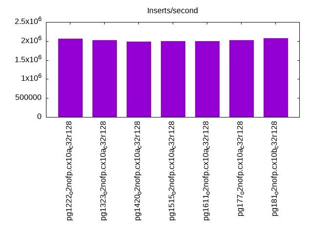
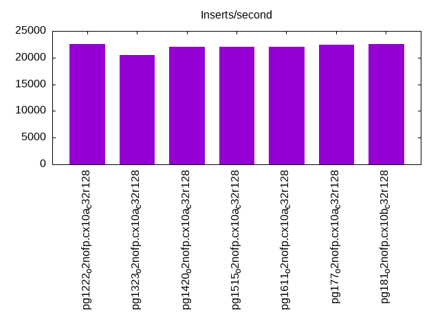
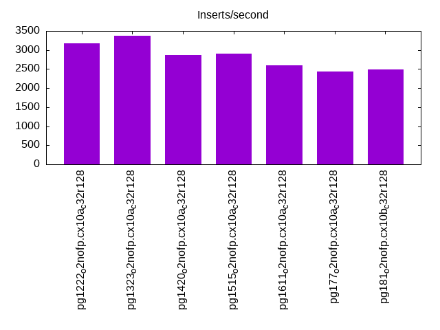
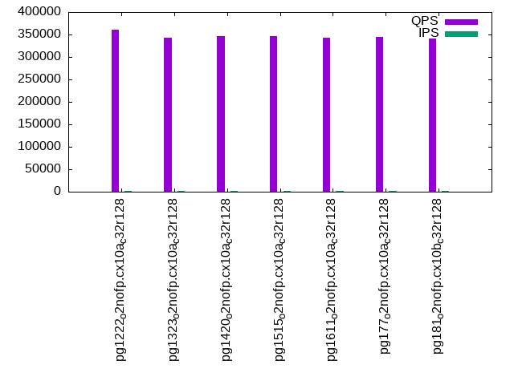
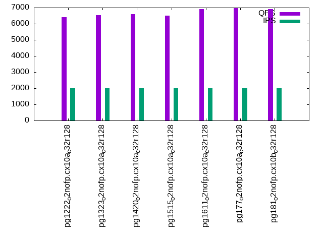
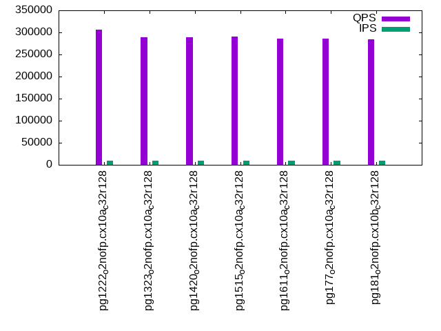
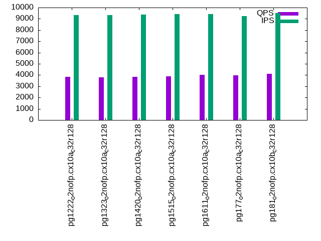
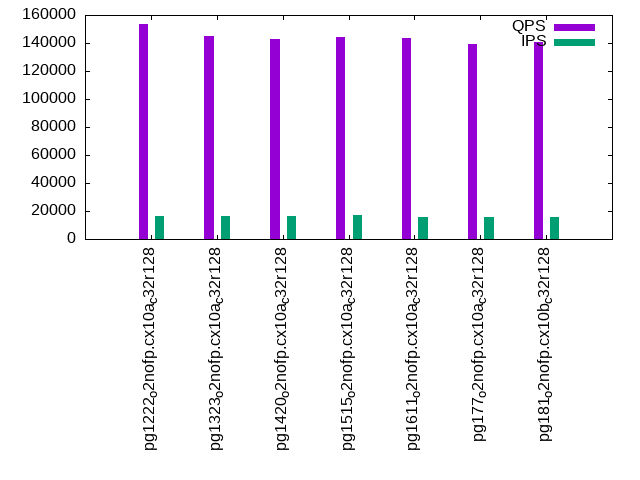
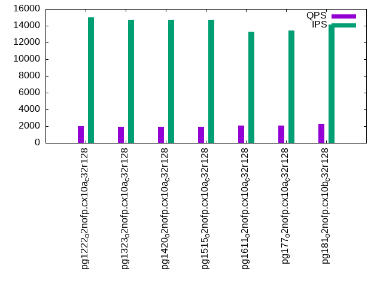

Introduction
This is a report for the insert benchmark with 4000M docs and 20 client(s). It is generated by scripts (bash, awk, sed) and Tufte might not be impressed. An overview of the insert benchmark is here and a short update is here. Below, by DBMS, I mean DBMS+version.config. An example is my8020.c10b40 where my means MySQL, 8020 is version 8.0.20 and c10b40 is the name for the configuration file.
The test server has 48 cores, 128G RAM and 2 NVMe devices setup with SW RAID. The benchmark was run with 20 clients and there were 1 or 3 connections per client (1 for queries or inserts without rate limits, 1+1 for rate limited inserts+deletes). It uses 12 tables with a table per client. It loads 10M rows per table without secondary indexes, creates 3 secondary indexes per table, then inserts 40m+10m rows per table with a delete per insert to avoid growing the table. It then does 6 read+write tests for 3600s each that do queries as fast as possible with 100,100,500,500,1000,1000 inserts/s and the same for deletes/s per client concurrent with the queries. The database is larger than RAM and most tests are IO-bound except for the range query (qr*) tests that frequently have a cached working set. Clients and the DBMS share one server.
The tested DBMS are:
- pg1222_o2nofp.cx10a_c32r128 - Postgres 12.22 with the cx10a_c32r128 config
- pg1323_o2nofp.cx10a_c32r128 - Postgres 13.23 with the cx10a_c32r128 config
- pg1420_o2nofp.cx10a_c32r128 - Postgres 14.20 with the cx10a_c32r128 config
- pg1515_o2nofp.cx10a_c32r128 - Postgres 15.15 with the cx10a_c32r128 config
- pg1611_o2nofp.cx10a_c32r128 - Postgres 16.11 with the cx10a_c32r128 config
- pg177_o2nofp.cx10a_c32r128 - Postgres 17.7 with the cx10a_c32r128 config
- pg181_o2nofp.cx10b_c32r128 - Postgres 18.1 with the cx10b_c32r128 config that uses io_method=sync
Contents
- Summary
- l.i0: load without secondary indexes
- l.x: create secondary indexes
- l.i1: continue load after secondary indexes created with 50 inserts per transaction
- l.i2: continue load after secondary indexes created with 5 inserts per transaction
- qr100.L1: range queries with 100 insert/s per client
- qp100.L2: point queries with 100 insert/s per client
- qr500.L3: range queries with 500 insert/s per client
- qp500.L4: point queries with 500 insert/s per client
- qr1000.L5: range queries with 1000 insert/s per client
- qp1000.L6: point queries with 1000 insert/s per client
Summary
The numbers are inserts/s for l.i0, l.i1 and l.i2, indexed docs (or rows) /s for l.x and queries/s for qr100, qp100 thru qr1000, qp1000" The values are the average rate over the entire test for inserts (IPS) and queries (QPS). The range of values for IPS and QPS is split into 3 parts: bottom 25%, middle 50%, top 25%. Values in the bottom 25% have a red background, values in the top 25% have a green background and values in the middle have no color. A gray background is used for values that can be ignored because the DBMS did not sustain the target insert rate. Red backgrounds are not used when the minimum value is within 80% of the max value.
| dbms | l.i0 | l.x | l.i1 | l.i2 | qr100 | qp100 | qr500 | qp500 | qr1000 | qp1000 |
|---|---|---|---|---|---|---|---|---|---|---|
| pg1222_o2nofp.cx10a_c32r128 | 2058672 | 2147075 | 22529 | 3184 | 361060 | 6398 | 306152 | 3826 | 153763 | 1989 |
| pg1323_o2nofp.cx10a_c32r128 | 2025316 | 2735978 | 20450 | 3372 | 343541 | 6540 | 289408 | 3816 | 144708 | 1959 |
| pg1420_o2nofp.cx10a_c32r128 | 1986097 | 2793296 | 22051 | 2869 | 346912 | 6591 | 289071 | 3847 | 142684 | 1964 |
| pg1515_o2nofp.cx10a_c32r128 | 1993024 | 2647254 | 22087 | 2896 | 345942 | 6490 | 290091 | 3887 | 144307 | 1945 |
| pg1611_o2nofp.cx10a_c32r128 | 2002002 | 2791347 | 22057 | 2597 | 343245 | 6901 | 285527 | 4039 | 143551 | 2052 |
| pg177_o2nofp.cx10a_c32r128 | 2027369 | 3341688 | 22415 | 2437 | 344865 | 6972 | 286298 | 3963 | 139108 | 2090 |
| pg181_o2nofp.cx10b_c32r128 | 2073613 | 3319502 | 22516 | 2486 | 341583 | 6905 | 283872 | 4087 | 140474 | 2294 |
This table has relative throughput, throughput for the DBMS relative to the DBMS in the first line, using the absolute throughput from the previous table. Values less than 0.95 have a yellow background. Values greater than 1.05 have a blue background.
| dbms | l.i0 | l.x | l.i1 | l.i2 | qr100 | qp100 | qr500 | qp500 | qr1000 | qp1000 |
|---|---|---|---|---|---|---|---|---|---|---|
| pg1222_o2nofp.cx10a_c32r128 | 1.00 | 1.00 | 1.00 | 1.00 | 1.00 | 1.00 | 1.00 | 1.00 | 1.00 | 1.00 |
| pg1323_o2nofp.cx10a_c32r128 | 0.98 | 1.27 | 0.91 | 1.06 | 0.95 | 1.02 | 0.95 | 1.00 | 0.94 | 0.98 |
| pg1420_o2nofp.cx10a_c32r128 | 0.96 | 1.30 | 0.98 | 0.90 | 0.96 | 1.03 | 0.94 | 1.01 | 0.93 | 0.99 |
| pg1515_o2nofp.cx10a_c32r128 | 0.97 | 1.23 | 0.98 | 0.91 | 0.96 | 1.01 | 0.95 | 1.02 | 0.94 | 0.98 |
| pg1611_o2nofp.cx10a_c32r128 | 0.97 | 1.30 | 0.98 | 0.82 | 0.95 | 1.08 | 0.93 | 1.06 | 0.93 | 1.03 |
| pg177_o2nofp.cx10a_c32r128 | 0.98 | 1.56 | 0.99 | 0.77 | 0.96 | 1.09 | 0.94 | 1.04 | 0.90 | 1.05 |
| pg181_o2nofp.cx10b_c32r128 | 1.01 | 1.55 | 1.00 | 0.78 | 0.95 | 1.08 | 0.93 | 1.07 | 0.91 | 1.15 |
This lists the average rate of inserts/s for the tests that do inserts concurrent with queries. For such tests the query rate is listed in the table above. The read+write tests are setup so that the insert rate should match the target rate every second. Cells that are not at least 95% of the target have a red background to indicate a failure to satisfy the target.
| dbms | qr100.L1 | qp100.L2 | qr500.L3 | qp500.L4 | qr1000.L5 | qp1000.L6 |
|---|---|---|---|---|---|---|
| pg1222_o2nofp.cx10a_c32r128 | 1988 | 1987 | 9885 | 9317 | 16725 | 15003 |
| pg1323_o2nofp.cx10a_c32r128 | 1987 | 1987 | 9860 | 9343 | 16536 | 14688 |
| pg1420_o2nofp.cx10a_c32r128 | 1987 | 1987 | 9885 | 9353 | 16371 | 14736 |
| pg1515_o2nofp.cx10a_c32r128 | 1987 | 1987 | 9874 | 9409 | 17013 | 14703 |
| pg1611_o2nofp.cx10a_c32r128 | 1987 | 1987 | 9896 | 9426 | 15940 | 13284 |
| pg177_o2nofp.cx10a_c32r128 | 1987 | 1987 | 9912 | 9259 | 15731 | 13425 |
| pg181_o2nofp.cx10b_c32r128 | 1987 | 1987 | 9904 | 9501 | 15873 | 14165 |
| target | 2000 | 2000 | 10000 | 10000 | 20000 | 20000 |
l.i0
l.i0: load without secondary indexes. Graphs for performance per 1-second interval are here.
Average throughput:
Insert response time histogram: each cell has the percentage of responses that take <= the time in the header and max is the max response time in seconds. For the max column values in the top 25% of the range have a red background and in the bottom 25% of the range have a green background. The red background is not used when the min value is within 80% of the max value.
| dbms | 256us | 1ms | 4ms | 16ms | 64ms | 256ms | 1s | 4s | 16s | gt | max |
|---|---|---|---|---|---|---|---|---|---|---|---|
| pg1222_o2nofp.cx10a_c32r128 | 92.765 | 7.009 | 0.120 | 0.087 | 0.013 | 0.006 | nonzero | 1.959 | |||
| pg1323_o2nofp.cx10a_c32r128 | 91.437 | 8.272 | 0.180 | 0.094 | 0.010 | 0.006 | nonzero | 1.652 | |||
| pg1420_o2nofp.cx10a_c32r128 | 89.116 | 10.611 | 0.189 | 0.064 | 0.014 | 0.007 | nonzero | 1.363 | |||
| pg1515_o2nofp.cx10a_c32r128 | 89.254 | 10.490 | 0.167 | 0.066 | 0.016 | 0.006 | nonzero | 2.379 | |||
| pg1611_o2nofp.cx10a_c32r128 | 89.419 | 10.364 | 0.133 | 0.062 | 0.016 | 0.006 | nonzero | 2.629 | |||
| pg177_o2nofp.cx10a_c32r128 | 90.038 | 9.704 | 0.171 | 0.063 | 0.017 | 0.006 | 0.727 | ||||
| pg181_o2nofp.cx10b_c32r128 | 92.951 | 6.739 | 0.213 | 0.072 | 0.020 | 0.006 | nonzero | 1.418 |
Performance metrics for the DBMS listed above. Some are normalized by throughput, others are not. Legend for results is here.
ips qps rps rmbps wps wmbps rpq rkbpq wpi wkbpi csps cpups cspq cpupq dbgb1 dbgb2 rss maxop p50 p99 tag 2058672 0 1862 15.0 11362.7 825.7 0.001 0.007 0.006 0.411 341356 59.1 0.166 14 382.7 478.8 5.3 1.959 110739 41654 pg1222_o2nofp.cx10a_c32r128 2025316 0 1758 14.2 9083.3 814.2 0.001 0.007 0.004 0.412 349922 58.4 0.173 14 382.7 478.8 9.2 1.652 111080 34561 pg1323_o2nofp.cx10a_c32r128 1986097 0 1685 13.2 8347.8 793.0 0.001 0.007 0.004 0.409 342492 57.6 0.172 14 382.7 478.8 16.2 1.363 109111 32578 pg1420_o2nofp.cx10a_c32r128 1993024 0 1651 12.9 8351.0 794.8 0.001 0.007 0.004 0.408 373442 57.1 0.187 14 382.7 478.8 6.9 2.379 109080 28569 pg1515_o2nofp.cx10a_c32r128 2002002 0 1720 13.5 8413.8 801.9 0.001 0.007 0.004 0.410 367875 57.6 0.184 14 382.7 478.8 16.4 2.629 108782 27770 pg1611_o2nofp.cx10a_c32r128 2027369 0 1723 13.8 8487.2 809.4 0.001 0.007 0.004 0.409 381907 57.5 0.188 14 382.7 478.8 96.9 0.727 109497 35764 pg177_o2nofp.cx10a_c32r128 2073613 0 1742 13.9 8657.6 825.3 0.001 0.007 0.004 0.408 355147 57.7 0.171 13 382.7 478.8 96.6 1.418 113475 34861 pg181_o2nofp.cx10b_c32r128
Average values from iostat.
r/s rkB/s rrqm/s %rrqm r_await rareq-s w/s wkB/s wrqm/s %wrqm w_await wareq-s d/s dkB/s drqm/s %drqm d_await dareq-s f/s f_await aqu-sz %util 115.6 1099.9 82.24 3.683 0.165 7.078 10177.3 847333 1632.6 11.45 1.856 87.07 0.000 0.000 0.000 0.000 0.000 0.000 0.000 0.000 19.93 93.38 pg1222_o2nofp.cx10a_c32r128 211.9 1750.0 68.21 11.87 0.175 6.902 7903.1 836203 1807.7 15.07 1.702 106.6 0.000 0.000 0.000 0.000 0.000 0.000 0.000 0.000 14.74 92.66 pg1323_o2nofp.cx10a_c32r128 873.5 7267.9 167.3 11.89 0.171 6.833 7708.8 815377 1483.6 13.05 1.962 107.1 0.000 0.000 0.000 0.000 0.000 0.000 0.000 0.000 16.80 93.81 pg1420_o2nofp.cx10a_c32r128 797.5 6373.6 37.95 7.970 0.147 5.597 7701.2 815499 1065.5 10.25 1.786 107.0 0.000 0.000 0.000 0.000 0.000 0.000 0.000 0.000 15.18 93.63 pg1515_o2nofp.cx10a_c32r128 850.3 6796.2 62.01 6.617 0.130 7.044 7749.3 823189 1168.1 11.20 2.108 107.3 0.000 0.000 0.000 0.000 0.000 0.000 0.000 0.000 18.15 94.09 pg1611_o2nofp.cx10a_c32r128 849.5 7022.8 77.74 11.98 0.163 6.721 7811.4 830916 1190.5 11.12 2.171 107.6 0.000 0.000 0.000 0.000 0.000 0.000 0.000 0.000 18.70 93.79 pg177_o2nofp.cx10a_c32r128 844.6 6976.2 78.61 8.431 0.150 6.672 7964.9 847424 1274.8 11.85 2.395 107.5 0.000 0.000 0.000 0.000 0.000 0.000 0.000 0.000 20.92 93.36 pg181_o2nofp.cx10b_c32r128
l.x
l.x: create secondary indexes.
Average throughput:

Performance metrics for the DBMS listed above. Some are normalized by throughput, others are not. Legend for results is here.
ips qps rps rmbps wps wmbps rpq rkbpq wpi wkbpi csps cpups cspq cpupq dbgb1 dbgb2 rss maxop p50 p99 tag 2147075 0 10892 684.1 10874.2 860.0 0.005 0.326 0.005 0.410 180712 18.5 0.084 4 768.8 864.8 50.2 0.076 NA NA pg1222_o2nofp.cx10a_c32r128 2735978 0 13859 871.3 7189.3 786.1 0.005 0.326 0.003 0.294 151779 21.5 0.055 4 768.4 864.5 42.4 0.012 NA NA pg1323_o2nofp.cx10a_c32r128 2793296 0 14150 889.6 7250.1 802.9 0.005 0.326 0.003 0.294 153521 21.4 0.055 4 768.4 863.6 43.6 0.011 NA NA pg1420_o2nofp.cx10a_c32r128 2647254 0 14701 933.5 7686.3 844.8 0.006 0.361 0.003 0.327 147306 20.2 0.056 4 768.4 864.5 52.3 0.009 NA NA pg1515_o2nofp.cx10a_c32r128 2791347 0 14091 889.6 7391.2 803.2 0.005 0.326 0.003 0.295 154340 20.9 0.055 4 768.4 864.5 30.7 0.008 NA NA pg1611_o2nofp.cx10a_c32r128 3341688 0 10927 1063.8 8618.3 956.0 0.003 0.326 0.003 0.293 87188 23.3 0.026 3 768.4 863.9 31.5 0.133 NA NA pg177_o2nofp.cx10a_c32r128 3319502 0 10833 1055.0 8557.4 948.8 0.003 0.325 0.003 0.293 87846 23.1 0.026 3 768.4 863.7 21.6 0.003 NA NA pg181_o2nofp.cx10b_c32r128
Average values from iostat.
r/s rkB/s rrqm/s %rrqm r_await rareq-s w/s wkB/s wrqm/s %wrqm w_await wareq-s d/s dkB/s drqm/s %drqm d_await dareq-s f/s f_await aqu-sz %util 5368.8 327116 344.1 2.535 0.325 62.67 10372.3 889128 2650.3 14.99 4.077 102.4 0.000 0.000 0.000 0.000 0.000 0.000 0.000 0.000 32.08 94.54 pg1222_o2nofp.cx10a_c32r128 6650.9 417855 178.2 1.209 0.354 64.11 6674.8 809798 1740.2 14.49 6.074 122.3 0.000 0.000 0.000 0.000 0.000 0.000 0.000 0.000 41.94 94.00 pg1323_o2nofp.cx10a_c32r128 6730.5 429305 82.96 0.576 0.355 64.67 6664.2 824720 1233.5 13.43 6.249 123.8 0.000 0.000 0.000 0.000 0.000 0.000 0.000 0.000 43.56 93.61 pg1420_o2nofp.cx10a_c32r128 7372.6 466859 260.7 1.152 0.377 65.90 7234.8 871172 1967.5 13.70 6.566 121.8 0.000 0.000 0.000 0.000 0.000 0.000 0.000 0.000 51.66 89.30 pg1515_o2nofp.cx10a_c32r128 6950.4 432685 239.9 1.145 0.356 64.61 7246.6 829694 1938.5 13.52 6.037 119.7 0.000 0.000 0.000 0.000 0.000 0.000 0.000 0.000 44.72 90.72 pg1611_o2nofp.cx10a_c32r128 5351.0 519017 534.5 1.883 0.447 90.11 8342.3 986718 2235.5 13.37 6.523 120.9 0.000 0.000 0.000 0.000 0.000 0.000 0.000 0.000 54.58 94.45 pg177_o2nofp.cx10a_c32r128 5349.4 516377 525.7 2.601 0.441 89.35 8682.5 981762 2424.2 13.03 6.206 119.2 0.000 0.000 0.000 0.000 0.000 0.000 0.000 0.000 52.44 93.69 pg181_o2nofp.cx10b_c32r128
l.i1
l.i1: continue load after secondary indexes created with 50 inserts per transaction. Graphs for performance per 1-second interval are here.
Average throughput:
Insert response time histogram: each cell has the percentage of responses that take <= the time in the header and max is the max response time in seconds. For the max column values in the top 25% of the range have a red background and in the bottom 25% of the range have a green background. The red background is not used when the min value is within 80% of the max value.
| dbms | 256us | 1ms | 4ms | 16ms | 64ms | 256ms | 1s | 4s | 16s | gt | max |
|---|---|---|---|---|---|---|---|---|---|---|---|
| pg1222_o2nofp.cx10a_c32r128 | 22.876 | 57.736 | 19.178 | 0.085 | 0.124 | 0.001 | 5.877 | ||||
| pg1323_o2nofp.cx10a_c32r128 | 19.451 | 55.797 | 24.538 | 0.118 | 0.095 | nonzero | 5.523 | ||||
| pg1420_o2nofp.cx10a_c32r128 | 19.997 | 59.692 | 20.104 | 0.095 | 0.111 | nonzero | 4.978 | ||||
| pg1515_o2nofp.cx10a_c32r128 | 19.375 | 60.516 | 19.873 | 0.117 | 0.118 | 3.629 | |||||
| pg1611_o2nofp.cx10a_c32r128 | 18.921 | 61.478 | 19.413 | 0.075 | 0.112 | 0.001 | 6.370 | ||||
| pg177_o2nofp.cx10a_c32r128 | 18.034 | 62.821 | 18.962 | 0.068 | 0.115 | 3.726 | |||||
| pg181_o2nofp.cx10b_c32r128 | 17.824 | 63.748 | 18.247 | 0.071 | 0.109 | 3.704 |
Delete response time histogram: each cell has the percentage of responses that take <= the time in the header and max is the max response time in seconds. For the max column values in the top 25% of the range have a red background and in the bottom 25% of the range have a green background. The red background is not used when the min value is within 80% of the max value.
| dbms | 256us | 1ms | 4ms | 16ms | 64ms | 256ms | 1s | 4s | 16s | gt | max |
|---|---|---|---|---|---|---|---|---|---|---|---|
| pg1222_o2nofp.cx10a_c32r128 | 2.680 | 10.086 | 30.731 | 51.763 | 4.662 | 0.026 | 0.052 | 3.195 | |||
| pg1323_o2nofp.cx10a_c32r128 | 2.370 | 12.834 | 30.928 | 47.000 | 6.764 | 0.055 | 0.049 | 2.995 | |||
| pg1420_o2nofp.cx10a_c32r128 | 2.325 | 9.038 | 25.230 | 57.952 | 5.355 | 0.039 | 0.060 | 2.373 | |||
| pg1515_o2nofp.cx10a_c32r128 | 2.531 | 9.403 | 23.180 | 59.318 | 5.462 | 0.046 | 0.060 | 2.908 | |||
| pg1611_o2nofp.cx10a_c32r128 | 2.223 | 7.785 | 21.627 | 62.077 | 6.188 | 0.034 | 0.065 | 3.093 | |||
| pg177_o2nofp.cx10a_c32r128 | 2.448 | 8.465 | 22.136 | 61.393 | 5.470 | 0.023 | 0.066 | 2.375 | |||
| pg181_o2nofp.cx10b_c32r128 | 2.378 | 8.485 | 25.995 | 57.834 | 5.218 | 0.032 | 0.057 | 2.344 |
Performance metrics for the DBMS listed above. Some are normalized by throughput, others are not. Legend for results is here.
ips qps rps rmbps wps wmbps rpq rkbpq wpi wkbpi csps cpups cspq cpupq dbgb1 dbgb2 rss maxop p50 p99 tag 22529 0 28467 225.7 32764.7 717.3 1.264 10.258 1.454 32.602 81793 29.8 3.631 635 781.9 879.1 83.4 5.877 1049 0 pg1222_o2nofp.cx10a_c32r128 20450 0 26684 250.7 31136.4 703.6 1.305 12.555 1.523 35.233 76294 27.8 3.731 653 781.3 941.0 3.3 5.523 949 0 pg1323_o2nofp.cx10a_c32r128 22051 0 27883 223.1 32376.4 723.4 1.264 10.363 1.468 33.593 79608 30.8 3.610 670 781.5 918.6 1.8 4.978 1050 0 pg1420_o2nofp.cx10a_c32r128 22087 0 28008 224.5 32052.8 721.4 1.268 10.406 1.451 33.445 81204 31.5 3.677 685 781.5 907.1 1.8 3.629 1049 0 pg1515_o2nofp.cx10a_c32r128 22057 0 28003 224.0 32258.8 718.8 1.270 10.401 1.463 33.371 77491 32.1 3.513 699 781.5 877.6 2.1 6.370 1099 0 pg1611_o2nofp.cx10a_c32r128 22415 0 28352 226.2 32701.9 727.1 1.265 10.335 1.459 33.218 78485 31.0 3.501 664 781.5 877.6 76.8 3.726 1099 0 pg177_o2nofp.cx10a_c32r128 22516 0 28523 226.9 33601.6 731.6 1.267 10.317 1.492 33.272 78927 31.0 3.505 661 781.5 877.6 82.1 3.704 1099 0 pg181_o2nofp.cx10b_c32r128
Average values from iostat.
r/s rkB/s rrqm/s %rrqm r_await rareq-s w/s wkB/s wrqm/s %wrqm w_await wareq-s d/s dkB/s drqm/s %drqm d_await dareq-s f/s f_await aqu-sz %util 15812.7 124189 1579.0 9.669 0.108 7.825 40251.1 772968 2136.6 5.426 0.218 21.54 0.000 0.000 0.000 0.000 0.000 0.000 0.000 0.000 10.62 89.41 pg1222_o2nofp.cx10a_c32r128 14932.9 137064 1696.7 9.893 0.119 9.337 37535.1 757474 2846.2 6.917 0.265 22.37 0.000 0.000 0.000 0.000 0.000 0.000 0.000 0.000 11.94 87.92 pg1323_o2nofp.cx10a_c32r128 15546.5 123175 1483.2 9.251 0.113 7.913 39927.3 778170 1809.4 4.668 0.273 22.10 0.000 0.000 0.000 0.000 0.000 0.000 0.000 0.000 12.86 89.86 pg1420_o2nofp.cx10a_c32r128 15707.9 124159 1525.1 9.085 0.114 7.919 39699.2 777437 2038.6 5.001 0.271 21.17 0.000 0.000 0.000 0.000 0.000 0.000 0.000 0.000 12.80 89.52 pg1515_o2nofp.cx10a_c32r128 15347.6 122745 1513.3 9.471 0.113 7.997 39282.4 771126 1749.0 4.689 0.267 22.23 0.000 0.000 0.000 0.000 0.000 0.000 0.000 0.000 12.58 88.99 pg1611_o2nofp.cx10a_c32r128 15476.4 123347 1479.7 9.248 0.114 7.958 39647.4 779361 1749.0 4.711 0.279 22.23 0.000 0.000 0.000 0.000 0.000 0.000 0.000 0.000 13.07 89.35 pg177_o2nofp.cx10a_c32r128 15591.5 123926 1498.2 9.120 0.113 7.935 39940.0 783728 2307.6 5.788 0.263 21.47 0.000 0.000 0.000 0.000 0.000 0.000 0.000 0.000 12.57 89.46 pg181_o2nofp.cx10b_c32r128
l.i2
l.i2: continue load after secondary indexes created with 5 inserts per transaction. Graphs for performance per 1-second interval are here.
Average throughput:
Insert response time histogram: each cell has the percentage of responses that take <= the time in the header and max is the max response time in seconds. For the max column values in the top 25% of the range have a red background and in the bottom 25% of the range have a green background. The red background is not used when the min value is within 80% of the max value.
| dbms | 256us | 1ms | 4ms | 16ms | 64ms | 256ms | 1s | 4s | 16s | gt | max |
|---|---|---|---|---|---|---|---|---|---|---|---|
| pg1222_o2nofp.cx10a_c32r128 | nonzero | 38.455 | 60.817 | 0.262 | 0.277 | 0.045 | 0.101 | 0.043 | nonzero | 4.410 | |
| pg1323_o2nofp.cx10a_c32r128 | 0.124 | 42.876 | 55.647 | 0.329 | 0.931 | 0.033 | 0.050 | 0.010 | nonzero | 4.482 | |
| pg1420_o2nofp.cx10a_c32r128 | 0.004 | 31.347 | 67.951 | 0.308 | 0.219 | 0.042 | 0.099 | 0.030 | nonzero | 5.714 | |
| pg1515_o2nofp.cx10a_c32r128 | 0.198 | 37.098 | 61.732 | 0.330 | 0.548 | 0.025 | 0.048 | 0.021 | nonzero | 4.810 | |
| pg1611_o2nofp.cx10a_c32r128 | 0.057 | 36.232 | 63.293 | 0.047 | 0.266 | 0.023 | 0.058 | 0.023 | nonzero | 4.646 | |
| pg177_o2nofp.cx10a_c32r128 | 0.042 | 33.708 | 65.620 | 0.115 | 0.383 | 0.031 | 0.069 | 0.032 | nonzero | 5.933 | |
| pg181_o2nofp.cx10b_c32r128 | 0.030 | 38.329 | 61.337 | 0.048 | 0.168 | 0.022 | 0.049 | 0.018 | 3.923 |
Delete response time histogram: each cell has the percentage of responses that take <= the time in the header and max is the max response time in seconds. For the max column values in the top 25% of the range have a red background and in the bottom 25% of the range have a green background. The red background is not used when the min value is within 80% of the max value.
| dbms | 256us | 1ms | 4ms | 16ms | 64ms | 256ms | 1s | 4s | 16s | gt | max |
|---|---|---|---|---|---|---|---|---|---|---|---|
| pg1222_o2nofp.cx10a_c32r128 | 8.443 | 91.553 | 0.002 | 0.002 | 0.001 | 2.114 | |||||
| pg1323_o2nofp.cx10a_c32r128 | 0.067 | 2.597 | 15.046 | 26.014 | 56.266 | 0.003 | 0.006 | nonzero | 1.422 | ||
| pg1420_o2nofp.cx10a_c32r128 | 0.044 | 1.157 | 0.017 | 6.782 | 91.995 | 0.003 | 0.002 | nonzero | 2.767 | ||
| pg1515_o2nofp.cx10a_c32r128 | 0.179 | 4.950 | 5.544 | 2.556 | 86.764 | 0.003 | 0.003 | nonzero | 3.166 | ||
| pg1611_o2nofp.cx10a_c32r128 | 0.109 | 2.408 | 1.236 | 0.112 | 96.130 | 0.004 | 0.001 | nonzero | 2.276 | ||
| pg177_o2nofp.cx10a_c32r128 | 0.186 | 2.335 | 1.438 | 0.208 | 95.830 | 0.002 | 0.001 | 0.001 | 3.436 | ||
| pg181_o2nofp.cx10b_c32r128 | 0.015 | 0.842 | 2.794 | 0.429 | 95.915 | 0.003 | 0.001 | 0.001 | 2.399 |
Performance metrics for the DBMS listed above. Some are normalized by throughput, others are not. Legend for results is here.
ips qps rps rmbps wps wmbps rpq rkbpq wpi wkbpi csps cpups cspq cpupq dbgb1 dbgb2 rss maxop p50 p99 tag 3184 0 3917 31.2 6237.0 97.9 1.230 10.023 1.959 31.497 26400 31.5 8.292 4749 785.2 881.3 84.1 4.410 265 0 pg1222_o2nofp.cx10a_c32r128 3372 0 4102 43.9 6308.6 107.1 1.216 13.334 1.871 32.520 27038 23.9 8.018 3402 784.2 880.2 7.8 4.482 265 125 pg1323_o2nofp.cx10a_c32r128 2869 0 3582 31.3 5623.7 86.7 1.249 11.171 1.960 30.939 24162 29.2 8.423 4886 784.9 880.9 3.7 5.714 135 70 pg1420_o2nofp.cx10a_c32r128 2896 0 3650 37.3 5703.6 90.9 1.260 13.201 1.969 32.157 23768 26.4 8.207 4376 784.8 880.8 35.5 4.810 145 80 pg1515_o2nofp.cx10a_c32r128 2597 0 3292 31.1 5103.3 82.1 1.267 12.269 1.965 32.371 21414 29.4 8.244 5433 784.8 880.9 3.9 4.646 125 80 pg1611_o2nofp.cx10a_c32r128 2437 0 3185 32.7 5175.5 82.1 1.307 13.725 2.124 34.513 18779 25.4 7.707 5004 784.8 880.9 80.9 5.933 215 40 pg177_o2nofp.cx10a_c32r128 2486 0 3070 26.4 4602.2 73.3 1.235 10.872 1.851 30.206 18816 30.5 7.570 5890 784.8 880.8 72.4 3.923 115 100 pg181_o2nofp.cx10b_c32r128
Average values from iostat.
r/s rkB/s rrqm/s %rrqm r_await rareq-s w/s wkB/s wrqm/s %wrqm w_await wareq-s d/s dkB/s drqm/s %drqm d_await dareq-s f/s f_await aqu-sz %util 1012.6 7792.4 75.02 5.857 0.083 7.892 7413.3 105641 170.8 2.045 0.044 14.79 0.000 0.000 0.000 0.000 0.000 0.000 0.000 0.000 0.480 66.88 pg1222_o2nofp.cx10a_c32r128 1316.3 15888.4 110.9 8.296 0.087 8.866 7630.6 115673 185.1 2.569 0.050 15.42 0.000 0.000 0.000 0.000 0.000 0.000 0.000 0.000 0.806 60.61 pg1323_o2nofp.cx10a_c32r128 936.8 8922.3 65.87 7.427 0.084 8.307 6836.5 94266.2 174.3 2.658 0.048 14.69 0.000 0.000 0.000 0.000 0.000 0.000 0.000 0.000 0.438 63.63 pg1420_o2nofp.cx10a_c32r128 1043.1 12992.7 82.08 8.519 0.086 8.870 6932.6 98680.9 164.5 2.488 0.053 15.26 0.000 0.000 0.000 0.000 0.000 0.000 0.000 0.000 0.554 60.09 pg1515_o2nofp.cx10a_c32r128 842.1 9521.0 88.64 12.10 0.085 8.508 6260.4 89281.1 145.7 2.284 0.051 15.41 0.000 0.000 0.000 0.000 0.000 0.000 0.000 0.000 0.459 61.59 pg1611_o2nofp.cx10a_c32r128 911.6 11670.3 80.42 13.00 0.086 9.054 6300.8 89003.3 107.6 1.753 0.051 15.40 0.000 0.000 0.000 0.000 0.000 0.000 0.000 0.000 0.486 55.75 pg177_o2nofp.cx10a_c32r128 707.7 6592.0 71.94 9.446 0.082 8.051 5601.2 79593.7 144.3 3.055 0.053 16.23 0.000 0.000 0.000 0.000 0.000 0.000 0.000 0.000 0.372 60.42 pg181_o2nofp.cx10b_c32r128
qr100.L1
qr100.L1: range queries with 100 insert/s per client. Graphs for performance per 1-second interval are here.
Average throughput:
Query response time histogram: each cell has the percentage of responses that take <= the time in the header and max is the max response time in seconds. For max values in the top 25% of the range have a red background and in the bottom 25% of the range have a green background. The red background is not used when the min value is within 80% of the max value.
| dbms | 256us | 1ms | 4ms | 16ms | 64ms | 256ms | 1s | 4s | 16s | gt | max |
|---|---|---|---|---|---|---|---|---|---|---|---|
| pg1222_o2nofp.cx10a_c32r128 | 99.995 | 0.004 | 0.001 | nonzero | nonzero | nonzero | nonzero | 0.601 | |||
| pg1323_o2nofp.cx10a_c32r128 | 99.995 | 0.005 | 0.001 | nonzero | nonzero | nonzero | nonzero | 0.732 | |||
| pg1420_o2nofp.cx10a_c32r128 | 99.995 | 0.004 | 0.001 | nonzero | nonzero | nonzero | nonzero | 0.271 | |||
| pg1515_o2nofp.cx10a_c32r128 | 99.995 | 0.004 | 0.001 | nonzero | nonzero | 0.083 | |||||
| pg1611_o2nofp.cx10a_c32r128 | 99.995 | 0.004 | 0.001 | nonzero | nonzero | nonzero | nonzero | 0.804 | |||
| pg177_o2nofp.cx10a_c32r128 | 99.995 | 0.004 | 0.001 | nonzero | nonzero | nonzero | nonzero | 0.353 | |||
| pg181_o2nofp.cx10b_c32r128 | 99.995 | 0.004 | 0.001 | nonzero | nonzero | nonzero | nonzero | 0.809 |
Insert response time histogram: each cell has the percentage of responses that take <= the time in the header and max is the max response time in seconds. For max values in the top 25% of the range have a red background and in the bottom 25% of the range have a green background. The red background is not used when the min value is within 80% of the max value.
| dbms | 256us | 1ms | 4ms | 16ms | 64ms | 256ms | 1s | 4s | 16s | gt | max |
|---|---|---|---|---|---|---|---|---|---|---|---|
| pg1222_o2nofp.cx10a_c32r128 | 90.944 | 8.803 | 0.120 | 0.125 | 0.008 | 1.349 | |||||
| pg1323_o2nofp.cx10a_c32r128 | 93.187 | 6.615 | 0.068 | 0.130 | 0.998 | ||||||
| pg1420_o2nofp.cx10a_c32r128 | 91.556 | 8.307 | 0.081 | 0.056 | 0.744 | ||||||
| pg1515_o2nofp.cx10a_c32r128 | 90.610 | 9.242 | 0.109 | 0.038 | 0.627 | ||||||
| pg1611_o2nofp.cx10a_c32r128 | 98.945 | 0.947 | 0.050 | 0.058 | 0.996 | ||||||
| pg177_o2nofp.cx10a_c32r128 | 98.469 | 1.416 | 0.048 | 0.061 | 0.006 | 1.116 | |||||
| pg181_o2nofp.cx10b_c32r128 | 98.326 | 1.520 | 0.099 | 0.053 | 0.001 | 1.394 |
Delete response time histogram: each cell has the percentage of responses that take <= the time in the header and max is the max response time in seconds. For max values in the top 25% of the range have a red background and in the bottom 25% of the range have a green background. The red background is not used when the min value is within 80% of the max value.
| dbms | 256us | 1ms | 4ms | 16ms | 64ms | 256ms | 1s | 4s | 16s | gt | max |
|---|---|---|---|---|---|---|---|---|---|---|---|
| pg1222_o2nofp.cx10a_c32r128 | 24.111 | 74.769 | 1.113 | 0.002 | 0.003 | 0.001 | 0.457 | ||||
| pg1323_o2nofp.cx10a_c32r128 | 21.687 | 75.902 | 2.405 | 0.001 | 0.006 | 0.765 | |||||
| pg1420_o2nofp.cx10a_c32r128 | 21.057 | 76.553 | 2.385 | 0.001 | 0.001 | 0.003 | 0.430 | ||||
| pg1515_o2nofp.cx10a_c32r128 | 23.320 | 74.820 | 1.855 | 0.001 | 0.004 | 0.197 | |||||
| pg1611_o2nofp.cx10a_c32r128 | 21.185 | 75.297 | 3.516 | 0.001 | 0.001 | 0.220 | |||||
| pg177_o2nofp.cx10a_c32r128 | 21.790 | 73.509 | 4.698 | 0.002 | 0.001 | 0.001 | 0.385 | ||||
| pg181_o2nofp.cx10b_c32r128 | 22.555 | 74.951 | 2.487 | 0.003 | 0.004 | 0.198 |
Performance metrics for the DBMS listed above. Some are normalized by throughput, others are not. Legend for results is here.
ips qps rps rmbps wps wmbps rpq rkbpq wpi wkbpi csps cpups cspq cpupq dbgb1 dbgb2 rss maxop p50 p99 tag 1988 361060 2612 21.0 2501.3 46.3 0.007 0.059 1.258 23.854 1379050 43.8 3.819 58 785.8 881.9 96.8 0.601 18332 17613 pg1222_o2nofp.cx10a_c32r128 1987 343541 2595 21.0 2572.3 47.0 0.008 0.062 1.294 24.203 1312310 43.7 3.820 61 784.5 880.5 95.2 0.732 17245 16558 pg1323_o2nofp.cx10a_c32r128 1987 346912 2605 20.9 2577.2 47.0 0.008 0.062 1.297 24.193 1325098 43.7 3.820 60 785.1 881.1 95.7 0.271 17197 16414 pg1420_o2nofp.cx10a_c32r128 1987 345942 2598 20.9 2558.8 46.9 0.008 0.062 1.288 24.148 1321464 43.7 3.820 61 785.1 881.1 96.2 0.083 17571 16798 pg1515_o2nofp.cx10a_c32r128 1987 343245 2683 21.5 2663.9 47.5 0.008 0.064 1.340 24.471 1310599 43.6 3.818 61 785.1 881.1 94.3 0.804 17373 16612 pg1611_o2nofp.cx10a_c32r128 1987 344865 2687 21.6 2697.4 47.8 0.008 0.064 1.357 24.630 1316668 43.6 3.818 61 785.0 881.1 95.1 0.353 17165 16318 pg177_o2nofp.cx10a_c32r128 1987 341583 2628 21.1 2411.8 45.8 0.008 0.063 1.214 23.592 1304597 43.6 3.819 61 785.0 881.0 96.1 0.809 16932 16111 pg181_o2nofp.cx10b_c32r128
Average values from iostat.
r/s rkB/s rrqm/s %rrqm r_await rareq-s w/s wkB/s wrqm/s %wrqm w_await wareq-s d/s dkB/s drqm/s %drqm d_await dareq-s f/s f_await aqu-sz %util 1314.3 10391.9 76.62 4.669 0.094 7.912 3243.1 51636.0 322.1 19.13 0.072 28.73 0.000 0.000 0.000 0.000 0.000 0.000 0.000 0.000 0.299 17.62 pg1222_o2nofp.cx10a_c32r128 1263.8 10166.1 93.35 6.405 0.095 8.050 3287.9 51949.9 253.5 14.44 0.073 24.85 0.000 0.000 0.000 0.000 0.000 0.000 0.000 0.000 0.292 17.54 pg1323_o2nofp.cx10a_c32r128 1300.8 10360.6 83.97 5.584 0.096 7.970 3268.1 51887.2 274.0 15.55 0.077 26.97 0.000 0.000 0.000 0.000 0.000 0.000 0.000 0.000 0.305 17.34 pg1420_o2nofp.cx10a_c32r128 1299.5 10314.8 87.97 5.807 0.095 7.946 3294.2 52086.9 296.8 15.81 0.070 27.44 0.000 0.000 0.000 0.000 0.000 0.000 0.000 0.000 0.299 17.11 pg1515_o2nofp.cx10a_c32r128 1286.9 10347.7 84.70 5.948 0.094 8.035 3316.7 52028.4 201.4 11.62 0.082 22.92 0.000 0.000 0.000 0.000 0.000 0.000 0.000 0.000 0.311 16.93 pg1611_o2nofp.cx10a_c32r128 1288.4 10397.1 80.72 5.461 0.095 8.067 3306.6 52247.6 226.7 14.08 0.079 24.56 0.000 0.000 0.000 0.000 0.000 0.000 0.000 0.000 0.287 17.15 pg177_o2nofp.cx10a_c32r128 1276.6 10288.3 94.64 6.422 0.094 8.065 3124.9 50794.4 297.3 17.03 0.112 26.86 0.000 0.000 0.000 0.000 0.000 0.000 0.000 0.000 0.375 19.33 pg181_o2nofp.cx10b_c32r128
qp100.L2
qp100.L2: point queries with 100 insert/s per client. Graphs for performance per 1-second interval are here.
Average throughput:
Query response time histogram: each cell has the percentage of responses that take <= the time in the header and max is the max response time in seconds. For max values in the top 25% of the range have a red background and in the bottom 25% of the range have a green background. The red background is not used when the min value is within 80% of the max value.
| dbms | 256us | 1ms | 4ms | 16ms | 64ms | 256ms | 1s | 4s | 16s | gt | max |
|---|---|---|---|---|---|---|---|---|---|---|---|
| pg1222_o2nofp.cx10a_c32r128 | nonzero | 2.390 | 93.810 | 0.707 | 2.958 | 0.075 | 0.043 | 0.017 | 0.002 | 6.091 | |
| pg1323_o2nofp.cx10a_c32r128 | 2.231 | 94.087 | 0.624 | 2.916 | 0.079 | 0.048 | 0.015 | 0.001 | 5.458 | ||
| pg1420_o2nofp.cx10a_c32r128 | nonzero | 2.313 | 94.083 | 0.620 | 2.841 | 0.075 | 0.051 | 0.016 | 0.001 | 4.923 | |
| pg1515_o2nofp.cx10a_c32r128 | nonzero | 2.234 | 94.105 | 0.661 | 2.853 | 0.077 | 0.052 | 0.015 | 0.001 | 5.773 | |
| pg1611_o2nofp.cx10a_c32r128 | nonzero | 2.328 | 94.392 | 0.230 | 2.915 | 0.082 | 0.042 | 0.010 | 0.001 | 5.460 | |
| pg177_o2nofp.cx10a_c32r128 | nonzero | 2.230 | 94.436 | 0.242 | 2.976 | 0.073 | 0.032 | 0.011 | 0.001 | 6.693 | |
| pg181_o2nofp.cx10b_c32r128 | nonzero | 2.137 | 94.545 | 0.249 | 2.937 | 0.082 | 0.039 | 0.010 | 0.001 | 5.375 |
Insert response time histogram: each cell has the percentage of responses that take <= the time in the header and max is the max response time in seconds. For max values in the top 25% of the range have a red background and in the bottom 25% of the range have a green background. The red background is not used when the min value is within 80% of the max value.
| dbms | 256us | 1ms | 4ms | 16ms | 64ms | 256ms | 1s | 4s | 16s | gt | max |
|---|---|---|---|---|---|---|---|---|---|---|---|
| pg1222_o2nofp.cx10a_c32r128 | 63.540 | 33.156 | 1.148 | 0.955 | 1.124 | 0.078 | 6.055 | ||||
| pg1323_o2nofp.cx10a_c32r128 | 64.952 | 31.942 | 1.122 | 0.978 | 0.974 | 0.032 | 5.215 | ||||
| pg1420_o2nofp.cx10a_c32r128 | 62.825 | 34.117 | 1.115 | 1.003 | 0.910 | 0.030 | 4.594 | ||||
| pg1515_o2nofp.cx10a_c32r128 | 63.890 | 32.699 | 1.188 | 1.133 | 1.023 | 0.067 | 5.127 | ||||
| pg1611_o2nofp.cx10a_c32r128 | 66.511 | 31.162 | 0.985 | 0.651 | 0.669 | 0.021 | 4.779 | ||||
| pg177_o2nofp.cx10a_c32r128 | 66.153 | 31.394 | 0.919 | 0.739 | 0.776 | 0.019 | 6.736 | ||||
| pg181_o2nofp.cx10b_c32r128 | 64.983 | 32.685 | 0.991 | 0.615 | 0.699 | 0.027 | 5.303 |
Delete response time histogram: each cell has the percentage of responses that take <= the time in the header and max is the max response time in seconds. For max values in the top 25% of the range have a red background and in the bottom 25% of the range have a green background. The red background is not used when the min value is within 80% of the max value.
| dbms | 256us | 1ms | 4ms | 16ms | 64ms | 256ms | 1s | 4s | 16s | gt | max |
|---|---|---|---|---|---|---|---|---|---|---|---|
| pg1222_o2nofp.cx10a_c32r128 | 55.915 | 39.570 | 4.401 | 0.028 | 0.033 | 0.051 | 0.001 | 4.255 | |||
| pg1323_o2nofp.cx10a_c32r128 | 50.146 | 45.094 | 4.665 | 0.019 | 0.040 | 0.036 | 0.001 | 4.470 | |||
| pg1420_o2nofp.cx10a_c32r128 | 46.623 | 48.293 | 4.974 | 0.017 | 0.051 | 0.040 | 0.001 | 4.540 | |||
| pg1515_o2nofp.cx10a_c32r128 | 53.537 | 41.418 | 4.903 | 0.022 | 0.080 | 0.037 | 0.003 | 4.915 | |||
| pg1611_o2nofp.cx10a_c32r128 | 43.539 | 51.183 | 5.243 | 0.014 | 0.013 | 0.008 | 3.417 | ||||
| pg177_o2nofp.cx10a_c32r128 | 43.327 | 52.190 | 4.435 | 0.007 | 0.019 | 0.022 | 3.640 | ||||
| pg181_o2nofp.cx10b_c32r128 | 47.122 | 48.034 | 4.805 | 0.009 | 0.014 | 0.015 | 0.001 | 4.221 |
Performance metrics for the DBMS listed above. Some are normalized by throughput, others are not. Legend for results is here.
ips qps rps rmbps wps wmbps rpq rkbpq wpi wkbpi csps cpups cspq cpupq dbgb1 dbgb2 rss maxop p50 p99 tag 1987 6398 90413 708.9 5391.8 66.9 14.131 113.456 2.714 34.476 202195 20.8 31.601 1560 786.5 882.5 88.0 6.091 368 0 pg1222_o2nofp.cx10a_c32r128 1987 6540 92252 723.6 5342.0 66.6 14.107 113.299 2.688 34.316 206193 21.2 31.530 1556 784.8 880.9 28.4 5.458 368 0 pg1323_o2nofp.cx10a_c32r128 1987 6591 92930 729.1 5319.8 66.5 14.099 113.281 2.677 34.276 207581 20.9 31.495 1522 785.3 881.4 88.1 4.923 368 0 pg1420_o2nofp.cx10a_c32r128 1987 6490 91586 718.3 5314.7 66.4 14.113 113.347 2.674 34.236 204566 20.5 31.523 1516 785.4 881.4 87.7 5.773 368 0 pg1515_o2nofp.cx10a_c32r128 1987 6901 97024 761.0 5259.9 66.0 14.060 112.923 2.647 33.991 216372 22.3 31.356 1551 785.3 881.3 87.9 5.460 384 0 pg1611_o2nofp.cx10a_c32r128 1987 6972 97991 768.6 5233.2 65.7 14.055 112.885 2.634 33.883 218411 22.5 31.327 1549 785.2 881.3 88.3 6.693 384 0 pg177_o2nofp.cx10a_c32r128 1987 6905 97068 761.3 5479.1 67.6 14.058 112.905 2.757 34.838 216543 22.5 31.362 1564 785.1 881.2 86.7 5.375 384 0 pg181_o2nofp.cx10b_c32r128
Average values from iostat.
r/s rkB/s rrqm/s %rrqm r_await rareq-s w/s wkB/s wrqm/s %wrqm w_await wareq-s d/s dkB/s drqm/s %drqm d_await dareq-s f/s f_await aqu-sz %util 43527.2 349536 404.4 0.951 0.080 8.030 5987.7 80925.8 2514.8 32.02 0.083 15.05 0.000 0.000 0.000 0.000 0.000 0.000 0.000 0.000 4.013 76.26 pg1222_o2nofp.cx10a_c32r128 44407.7 356714 357.8 0.847 0.080 8.032 5887.3 79706.5 2334.4 30.82 0.068 14.86 0.000 0.000 0.000 0.000 0.000 0.000 0.000 0.000 4.004 77.74 pg1323_o2nofp.cx10a_c32r128 44687.3 359015 338.1 0.786 0.080 8.034 5870.9 78986.9 2168.9 29.23 0.070 14.74 0.000 0.000 0.000 0.000 0.000 0.000 0.000 0.000 4.042 78.63 pg1420_o2nofp.cx10a_c32r128 44040.1 353706 362.2 0.858 0.080 8.031 5910.9 79501.8 2272.3 30.38 0.070 14.95 0.000 0.000 0.000 0.000 0.000 0.000 0.000 0.000 4.001 77.60 pg1515_o2nofp.cx10a_c32r128 46877.8 376717 514.3 1.123 0.080 8.036 6065.7 82625.7 2965.1 35.89 0.074 15.21 0.000 0.000 0.000 0.000 0.000 0.000 0.000 0.000 4.261 80.08 pg1611_o2nofp.cx10a_c32r128 47476.3 381503 571.6 1.234 0.080 8.035 6175.7 83284.8 3052.4 35.81 0.082 14.83 0.000 0.000 0.000 0.000 0.000 0.000 0.000 0.000 4.355 79.66 pg177_o2nofp.cx10a_c32r128 46889.6 376711 530.0 1.173 0.080 8.033 6397.0 84650.4 2940.7 35.17 0.083 14.80 0.000 0.000 0.000 0.000 0.000 0.000 0.000 0.000 4.379 80.29 pg181_o2nofp.cx10b_c32r128
qr500.L3
qr500.L3: range queries with 500 insert/s per client. Graphs for performance per 1-second interval are here.
Average throughput:
Query response time histogram: each cell has the percentage of responses that take <= the time in the header and max is the max response time in seconds. For max values in the top 25% of the range have a red background and in the bottom 25% of the range have a green background. The red background is not used when the min value is within 80% of the max value.
| dbms | 256us | 1ms | 4ms | 16ms | 64ms | 256ms | 1s | 4s | 16s | gt | max |
|---|---|---|---|---|---|---|---|---|---|---|---|
| pg1222_o2nofp.cx10a_c32r128 | 99.969 | 0.025 | 0.004 | 0.001 | 0.001 | nonzero | nonzero | nonzero | 3.220 | ||
| pg1323_o2nofp.cx10a_c32r128 | 99.964 | 0.029 | 0.005 | 0.001 | 0.001 | nonzero | nonzero | nonzero | 3.037 | ||
| pg1420_o2nofp.cx10a_c32r128 | 99.962 | 0.031 | 0.005 | 0.001 | 0.002 | nonzero | nonzero | nonzero | 3.641 | ||
| pg1515_o2nofp.cx10a_c32r128 | 99.961 | 0.031 | 0.005 | 0.001 | 0.002 | nonzero | nonzero | nonzero | nonzero | 5.466 | |
| pg1611_o2nofp.cx10a_c32r128 | 99.966 | 0.027 | 0.004 | 0.001 | 0.001 | nonzero | nonzero | nonzero | 2.717 | ||
| pg177_o2nofp.cx10a_c32r128 | 99.968 | 0.025 | 0.005 | 0.001 | 0.001 | nonzero | nonzero | nonzero | 3.332 | ||
| pg181_o2nofp.cx10b_c32r128 | 99.967 | 0.026 | 0.005 | 0.001 | 0.001 | nonzero | nonzero | nonzero | 3.403 |
Insert response time histogram: each cell has the percentage of responses that take <= the time in the header and max is the max response time in seconds. For max values in the top 25% of the range have a red background and in the bottom 25% of the range have a green background. The red background is not used when the min value is within 80% of the max value.
| dbms | 256us | 1ms | 4ms | 16ms | 64ms | 256ms | 1s | 4s | 16s | gt | max |
|---|---|---|---|---|---|---|---|---|---|---|---|
| pg1222_o2nofp.cx10a_c32r128 | 78.547 | 20.351 | 0.635 | 0.330 | 0.135 | 0.002 | 4.488 | ||||
| pg1323_o2nofp.cx10a_c32r128 | 76.439 | 22.467 | 0.641 | 0.311 | 0.140 | 0.002 | 4.559 | ||||
| pg1420_o2nofp.cx10a_c32r128 | 75.705 | 23.059 | 0.763 | 0.351 | 0.122 | 3.748 | |||||
| pg1515_o2nofp.cx10a_c32r128 | 74.761 | 24.048 | 0.721 | 0.347 | 0.119 | 0.004 | 5.558 | ||||
| pg1611_o2nofp.cx10a_c32r128 | 82.143 | 17.000 | 0.562 | 0.223 | 0.069 | 0.002 | 4.831 | ||||
| pg177_o2nofp.cx10a_c32r128 | 83.535 | 15.676 | 0.474 | 0.244 | 0.071 | 3.722 | |||||
| pg181_o2nofp.cx10b_c32r128 | 82.975 | 16.299 | 0.459 | 0.218 | 0.046 | 0.003 | 6.631 |
Delete response time histogram: each cell has the percentage of responses that take <= the time in the header and max is the max response time in seconds. For max values in the top 25% of the range have a red background and in the bottom 25% of the range have a green background. The red background is not used when the min value is within 80% of the max value.
| dbms | 256us | 1ms | 4ms | 16ms | 64ms | 256ms | 1s | 4s | 16s | gt | max |
|---|---|---|---|---|---|---|---|---|---|---|---|
| pg1222_o2nofp.cx10a_c32r128 | 5.695 | 88.957 | 5.302 | 0.020 | 0.016 | 0.010 | nonzero | 4.088 | |||
| pg1323_o2nofp.cx10a_c32r128 | 1.280 | 92.331 | 6.337 | 0.025 | 0.015 | 0.011 | 3.848 | ||||
| pg1420_o2nofp.cx10a_c32r128 | 0.125 | 89.337 | 10.470 | 0.037 | 0.023 | 0.009 | 3.728 | ||||
| pg1515_o2nofp.cx10a_c32r128 | 3.510 | 85.061 | 11.365 | 0.032 | 0.021 | 0.011 | 0.001 | 4.973 | |||
| pg1611_o2nofp.cx10a_c32r128 | 0.053 | 84.997 | 14.920 | 0.020 | 0.005 | 0.004 | 3.536 | ||||
| pg177_o2nofp.cx10a_c32r128 | 1.987 | 85.642 | 12.347 | 0.019 | 0.004 | 0.002 | 2.526 | ||||
| pg181_o2nofp.cx10b_c32r128 | 2.172 | 85.362 | 12.447 | 0.014 | 0.004 | 0.002 | nonzero | 5.657 |
Performance metrics for the DBMS listed above. Some are normalized by throughput, others are not. Legend for results is here.
ips qps rps rmbps wps wmbps rpq rkbpq wpi wkbpi csps cpups cspq cpupq dbgb1 dbgb2 rss maxop p50 p99 tag 9885 306152 13172 105.5 16057.9 257.6 0.043 0.353 1.625 26.683 1143574 51.5 3.735 81 789.6 885.7 89.2 3.220 15453 13222 pg1222_o2nofp.cx10a_c32r128 9860 289408 13131 105.4 16016.6 256.5 0.045 0.373 1.624 26.633 1079837 51.7 3.731 86 787.4 883.4 89.0 3.037 14502 12450 pg1323_o2nofp.cx10a_c32r128 9885 289071 13180 106.3 15994.1 256.5 0.046 0.376 1.618 26.570 1075179 52.3 3.719 87 786.6 882.6 88.7 3.641 14496 12137 pg1420_o2nofp.cx10a_c32r128 9874 290091 13157 106.0 15970.4 256.3 0.045 0.374 1.617 26.576 1076201 52.2 3.710 86 786.9 882.9 88.4 5.466 14694 12391 pg1515_o2nofp.cx10a_c32r128 9896 285527 13186 106.4 16001.0 256.7 0.046 0.382 1.617 26.560 1054556 52.9 3.693 89 786.4 882.5 86.2 2.717 14400 12418 pg1611_o2nofp.cx10a_c32r128 9912 286298 13218 106.7 16032.6 257.3 0.046 0.382 1.618 26.577 1060941 52.6 3.706 88 786.2 882.3 86.6 3.332 14336 12387 pg177_o2nofp.cx10a_c32r128 9904 283872 13202 106.5 16030.1 256.9 0.047 0.384 1.619 26.566 1051452 52.6 3.704 89 786.2 882.3 85.9 3.403 14209 12115 pg181_o2nofp.cx10b_c32r128
Average values from iostat.
r/s rkB/s rrqm/s %rrqm r_await rareq-s w/s wkB/s wrqm/s %wrqm w_await wareq-s d/s dkB/s drqm/s %drqm d_await dareq-s f/s f_await aqu-sz %util 5749.2 46061.6 216.4 3.455 0.097 8.001 17633.3 274481 1109.7 7.139 0.050 17.41 0.000 0.000 0.000 0.000 0.000 0.000 0.000 0.000 1.282 66.67 pg1222_o2nofp.cx10a_c32r128 5836.8 46604.2 228.5 3.602 0.098 7.978 17935.4 274264 999.1 6.497 0.049 17.02 0.000 0.000 0.000 0.000 0.000 0.000 0.000 0.000 1.323 67.13 pg1323_o2nofp.cx10a_c32r128 5937.7 47469.9 273.7 4.262 0.098 7.984 18012.4 275356 1165.9 7.415 0.051 17.00 0.000 0.000 0.000 0.000 0.000 0.000 0.000 0.000 1.361 65.85 pg1420_o2nofp.cx10a_c32r128 6110.5 48800.0 272.1 4.051 0.098 7.977 18040.0 274886 1054.2 6.698 0.051 17.03 0.000 0.000 0.000 0.000 0.000 0.000 0.000 0.000 1.378 61.77 pg1515_o2nofp.cx10a_c32r128 6036.6 48304.5 335.2 5.183 0.096 7.994 18690.3 276869 824.9 5.669 0.055 16.90 0.000 0.000 0.000 0.000 0.000 0.000 0.000 0.000 1.446 66.29 pg1611_o2nofp.cx10a_c32r128 5913.7 47332.3 305.3 4.753 0.093 7.994 18830.7 277362 689.9 4.669 0.055 16.38 0.000 0.000 0.000 0.000 0.000 0.000 0.000 0.000 1.436 70.81 pg177_o2nofp.cx10a_c32r128 5945.0 47600.9 313.9 4.791 0.095 7.986 18699.9 276841 771.4 5.177 0.058 16.62 0.000 0.000 0.000 0.000 0.000 0.000 0.000 0.000 1.460 67.11 pg181_o2nofp.cx10b_c32r128
qp500.L4
qp500.L4: point queries with 500 insert/s per client. Graphs for performance per 1-second interval are here.
Average throughput:
Query response time histogram: each cell has the percentage of responses that take <= the time in the header and max is the max response time in seconds. For max values in the top 25% of the range have a red background and in the bottom 25% of the range have a green background. The red background is not used when the min value is within 80% of the max value.
| dbms | 256us | 1ms | 4ms | 16ms | 64ms | 256ms | 1s | 4s | 16s | gt | max |
|---|---|---|---|---|---|---|---|---|---|---|---|
| pg1222_o2nofp.cx10a_c32r128 | 0.102 | 90.621 | 3.499 | 5.647 | 0.085 | 0.026 | 0.014 | 0.005 | 9.381 | ||
| pg1323_o2nofp.cx10a_c32r128 | 0.092 | 90.557 | 3.534 | 5.690 | 0.084 | 0.023 | 0.013 | 0.006 | 8.396 | ||
| pg1420_o2nofp.cx10a_c32r128 | 0.096 | 90.822 | 3.337 | 5.616 | 0.083 | 0.026 | 0.014 | 0.005 | 11.496 | ||
| pg1515_o2nofp.cx10a_c32r128 | 0.096 | 90.690 | 3.465 | 5.623 | 0.086 | 0.022 | 0.014 | 0.004 | 11.402 | ||
| pg1611_o2nofp.cx10a_c32r128 | 0.104 | 92.040 | 2.072 | 5.673 | 0.070 | 0.023 | 0.013 | 0.004 | 9.823 | ||
| pg177_o2nofp.cx10a_c32r128 | 0.104 | 91.970 | 2.130 | 5.688 | 0.069 | 0.020 | 0.012 | 0.006 | 10.202 | ||
| pg181_o2nofp.cx10b_c32r128 | 0.093 | 91.885 | 2.185 | 5.728 | 0.070 | 0.023 | 0.012 | 0.004 | 8.719 |
Insert response time histogram: each cell has the percentage of responses that take <= the time in the header and max is the max response time in seconds. For max values in the top 25% of the range have a red background and in the bottom 25% of the range have a green background. The red background is not used when the min value is within 80% of the max value.
| dbms | 256us | 1ms | 4ms | 16ms | 64ms | 256ms | 1s | 4s | 16s | gt | max |
|---|---|---|---|---|---|---|---|---|---|---|---|
| pg1222_o2nofp.cx10a_c32r128 | 25.300 | 69.276 | 4.678 | 0.377 | 0.269 | 0.099 | 9.354 | ||||
| pg1323_o2nofp.cx10a_c32r128 | 25.881 | 68.584 | 4.873 | 0.316 | 0.243 | 0.103 | 8.380 | ||||
| pg1420_o2nofp.cx10a_c32r128 | 27.020 | 67.582 | 4.651 | 0.387 | 0.263 | 0.098 | 11.714 | ||||
| pg1515_o2nofp.cx10a_c32r128 | 25.948 | 68.565 | 4.821 | 0.332 | 0.257 | 0.077 | 11.244 | ||||
| pg1611_o2nofp.cx10a_c32r128 | 27.979 | 68.340 | 3.030 | 0.315 | 0.260 | 0.076 | 9.649 | ||||
| pg177_o2nofp.cx10a_c32r128 | 27.721 | 68.431 | 3.201 | 0.289 | 0.239 | 0.120 | 11.004 | ||||
| pg181_o2nofp.cx10b_c32r128 | 28.193 | 68.421 | 2.743 | 0.338 | 0.241 | 0.064 | 8.867 |
Delete response time histogram: each cell has the percentage of responses that take <= the time in the header and max is the max response time in seconds. For max values in the top 25% of the range have a red background and in the bottom 25% of the range have a green background. The red background is not used when the min value is within 80% of the max value.
| dbms | 256us | 1ms | 4ms | 16ms | 64ms | 256ms | 1s | 4s | 16s | gt | max |
|---|---|---|---|---|---|---|---|---|---|---|---|
| pg1222_o2nofp.cx10a_c32r128 | 49.879 | 49.646 | 0.201 | 0.194 | 0.066 | 0.014 | 8.869 | ||||
| pg1323_o2nofp.cx10a_c32r128 | 41.408 | 58.147 | 0.210 | 0.142 | 0.060 | 0.033 | 7.632 | ||||
| pg1420_o2nofp.cx10a_c32r128 | 37.732 | 61.764 | 0.221 | 0.192 | 0.072 | 0.018 | 8.708 | ||||
| pg1515_o2nofp.cx10a_c32r128 | 43.819 | 55.768 | 0.198 | 0.146 | 0.063 | 0.005 | 9.184 | ||||
| pg1611_o2nofp.cx10a_c32r128 | 28.759 | 70.805 | 0.213 | 0.143 | 0.067 | 0.012 | 7.183 | ||||
| pg177_o2nofp.cx10a_c32r128 | 26.146 | 73.442 | 0.203 | 0.137 | 0.058 | 0.014 | 7.882 | ||||
| pg181_o2nofp.cx10b_c32r128 | 34.238 | 65.364 | 0.188 | 0.147 | 0.050 | 0.013 | 7.340 |
Performance metrics for the DBMS listed above. Some are normalized by throughput, others are not. Legend for results is here.
ips qps rps rmbps wps wmbps rpq rkbpq wpi wkbpi csps cpups cspq cpupq dbgb1 dbgb2 rss maxop p50 p99 tag 9317 3826 73438 576.2 20030.0 277.3 19.195 154.209 2.150 30.479 177481 37.4 46.389 4692 792.8 888.9 89.2 9.381 208 0 pg1222_o2nofp.cx10a_c32r128 9343 3816 73424 576.1 20036.5 278.5 19.241 154.602 2.144 30.523 177091 38.1 46.409 4793 790.7 886.7 50.1 8.396 208 0 pg1323_o2nofp.cx10a_c32r128 9353 3847 73805 579.1 20040.8 278.8 19.187 154.164 2.143 30.529 176749 38.1 45.948 4754 789.7 885.8 48.1 11.496 208 0 pg1420_o2nofp.cx10a_c32r128 9409 3887 74532 584.8 20031.5 279.9 19.175 154.067 2.129 30.461 179013 38.2 46.054 4717 789.9 886.0 48.0 11.402 208 0 pg1515_o2nofp.cx10a_c32r128 9426 4039 76654 601.4 20116.2 280.6 18.978 152.472 2.134 30.479 179943 39.7 44.550 4718 789.5 885.5 41.5 9.823 224 0 pg1611_o2nofp.cx10a_c32r128 9259 3963 75210 590.1 19729.9 275.5 18.978 152.475 2.131 30.473 176203 39.0 44.463 4724 789.2 885.2 33.5 10.202 224 0 pg177_o2nofp.cx10a_c32r128 9501 4087 77495 608.2 20343.0 283.3 18.962 152.379 2.141 30.535 182461 39.6 44.645 4651 789.3 885.3 38.2 8.719 224 0 pg181_o2nofp.cx10b_c32r128
Average values from iostat.
r/s rkB/s rrqm/s %rrqm r_await rareq-s w/s wkB/s wrqm/s %wrqm w_await wareq-s d/s dkB/s drqm/s %drqm d_await dareq-s f/s f_await aqu-sz %util 38320.8 301104 2007.4 5.045 0.104 7.866 27433.4 331665 4525.2 15.89 0.148 12.85 0.000 0.000 0.000 0.000 0.000 0.000 0.000 0.000 8.368 74.25 pg1222_o2nofp.cx10a_c32r128 38299.2 301242 2098.1 5.371 0.105 7.909 27570.2 333670 4590.2 16.11 0.146 12.87 0.000 0.000 0.000 0.000 0.000 0.000 0.000 0.000 8.421 74.68 pg1323_o2nofp.cx10a_c32r128 38303.6 302033 2035.0 5.252 0.105 7.828 26722.9 331752 4874.4 17.48 0.145 13.22 0.000 0.000 0.000 0.000 0.000 0.000 0.000 0.000 8.294 73.93 pg1420_o2nofp.cx10a_c32r128 38723.7 304796 2035.8 5.053 0.104 7.877 27264.0 333805 4567.3 16.19 0.146 13.01 0.000 0.000 0.000 0.000 0.000 0.000 0.000 0.000 8.412 74.64 pg1515_o2nofp.cx10a_c32r128 40426.9 320540 3183.6 7.393 0.107 7.951 29390.8 350863 6617.0 20.16 0.160 12.77 0.000 0.000 0.000 0.000 0.000 0.000 0.000 0.000 9.391 72.95 pg1611_o2nofp.cx10a_c32r128 39764.5 314631 3037.8 7.276 0.108 7.939 29321.5 343923 5854.3 18.33 0.160 12.51 0.000 0.000 0.000 0.000 0.000 0.000 0.000 0.000 9.262 71.80 pg177_o2nofp.cx10a_c32r128 41127.6 325135 3180.8 7.272 0.107 7.902 30235.2 355101 6358.5 18.89 0.163 12.35 0.000 0.000 0.000 0.000 0.000 0.000 0.000 0.000 9.632 74.02 pg181_o2nofp.cx10b_c32r128
qr1000.L5
qr1000.L5: range queries with 1000 insert/s per client. Graphs for performance per 1-second interval are here.
Average throughput:
Query response time histogram: each cell has the percentage of responses that take <= the time in the header and max is the max response time in seconds. For max values in the top 25% of the range have a red background and in the bottom 25% of the range have a green background. The red background is not used when the min value is within 80% of the max value.
| dbms | 256us | 1ms | 4ms | 16ms | 64ms | 256ms | 1s | 4s | 16s | gt | max |
|---|---|---|---|---|---|---|---|---|---|---|---|
| pg1222_o2nofp.cx10a_c32r128 | 98.619 | 1.158 | 0.092 | 0.091 | 0.039 | 0.001 | nonzero | nonzero | nonzero | 5.984 | |
| pg1323_o2nofp.cx10a_c32r128 | 98.398 | 1.364 | 0.098 | 0.097 | 0.042 | 0.001 | nonzero | nonzero | 2.348 | ||
| pg1420_o2nofp.cx10a_c32r128 | 98.252 | 1.501 | 0.103 | 0.101 | 0.042 | 0.001 | nonzero | nonzero | nonzero | 11.111 | |
| pg1515_o2nofp.cx10a_c32r128 | 98.332 | 1.423 | 0.103 | 0.099 | 0.041 | 0.001 | nonzero | nonzero | 2.121 | ||
| pg1611_o2nofp.cx10a_c32r128 | 98.767 | 1.052 | 0.053 | 0.079 | 0.047 | 0.002 | nonzero | nonzero | 2.651 | ||
| pg177_o2nofp.cx10a_c32r128 | 98.683 | 1.130 | 0.054 | 0.081 | 0.050 | 0.002 | nonzero | nonzero | 2.434 | ||
| pg181_o2nofp.cx10b_c32r128 | 98.764 | 1.054 | 0.053 | 0.080 | 0.047 | 0.002 | nonzero | nonzero | 2.005 |
Insert response time histogram: each cell has the percentage of responses that take <= the time in the header and max is the max response time in seconds. For max values in the top 25% of the range have a red background and in the bottom 25% of the range have a green background. The red background is not used when the min value is within 80% of the max value.
| dbms | 256us | 1ms | 4ms | 16ms | 64ms | 256ms | 1s | 4s | 16s | gt | max |
|---|---|---|---|---|---|---|---|---|---|---|---|
| pg1222_o2nofp.cx10a_c32r128 | 25.531 | 45.646 | 28.459 | 0.220 | 0.134 | 0.011 | 13.090 | ||||
| pg1323_o2nofp.cx10a_c32r128 | 25.638 | 44.639 | 29.347 | 0.225 | 0.144 | 0.008 | 11.768 | ||||
| pg1420_o2nofp.cx10a_c32r128 | 20.565 | 46.403 | 32.653 | 0.208 | 0.164 | 0.007 | 13.108 | ||||
| pg1515_o2nofp.cx10a_c32r128 | 24.201 | 46.435 | 29.025 | 0.200 | 0.135 | 0.004 | 8.609 | ||||
| pg1611_o2nofp.cx10a_c32r128 | 21.138 | 42.966 | 35.432 | 0.332 | 0.129 | 0.003 | 6.886 | ||||
| pg177_o2nofp.cx10a_c32r128 | 20.535 | 43.295 | 35.678 | 0.340 | 0.147 | 0.004 | 9.128 | ||||
| pg181_o2nofp.cx10b_c32r128 | 20.430 | 43.824 | 35.294 | 0.293 | 0.157 | 0.003 | 6.156 |
Delete response time histogram: each cell has the percentage of responses that take <= the time in the header and max is the max response time in seconds. For max values in the top 25% of the range have a red background and in the bottom 25% of the range have a green background. The red background is not used when the min value is within 80% of the max value.
| dbms | 256us | 1ms | 4ms | 16ms | 64ms | 256ms | 1s | 4s | 16s | gt | max |
|---|---|---|---|---|---|---|---|---|---|---|---|
| pg1222_o2nofp.cx10a_c32r128 | 0.031 | 84.292 | 15.540 | 0.056 | 0.081 | nonzero | 4.190 | ||||
| pg1323_o2nofp.cx10a_c32r128 | 0.021 | 82.453 | 17.362 | 0.078 | 0.086 | nonzero | 7.195 | ||||
| pg1420_o2nofp.cx10a_c32r128 | 0.008 | 82.757 | 17.077 | 0.070 | 0.088 | nonzero | 4.057 | ||||
| pg1515_o2nofp.cx10a_c32r128 | 0.008 | 84.357 | 15.485 | 0.064 | 0.086 | nonzero | 5.142 | ||||
| pg1611_o2nofp.cx10a_c32r128 | 0.003 | 79.918 | 19.906 | 0.099 | 0.074 | nonzero | 6.141 | ||||
| pg177_o2nofp.cx10a_c32r128 | nonzero | 79.211 | 20.618 | 0.082 | 0.089 | 2.692 | |||||
| pg181_o2nofp.cx10b_c32r128 | 0.001 | 80.854 | 18.986 | 0.060 | 0.098 | nonzero | 4.137 |
Performance metrics for the DBMS listed above. Some are normalized by throughput, others are not. Legend for results is here.
ips qps rps rmbps wps wmbps rpq rkbpq wpi wkbpi csps cpups cspq cpupq dbgb1 dbgb2 rss maxop p50 p99 tag 16725 153763 22162 176.7 26085.6 545.8 0.144 1.177 1.560 33.416 452179 70.8 2.941 221 803.6 936.8 85.8 5.984 7819 575 pg1222_o2nofp.cx10a_c32r128 16536 144708 21919 174.6 25758.2 542.8 0.151 1.236 1.558 33.614 421741 71.6 2.914 237 801.9 897.9 86.4 2.348 7495 416 pg1323_o2nofp.cx10a_c32r128 16371 142684 21678 172.8 25379.1 541.9 0.152 1.240 1.550 33.893 413941 72.7 2.901 245 800.5 939.8 82.2 11.111 7304 479 pg1420_o2nofp.cx10a_c32r128 17013 144307 22550 179.7 26157.2 557.7 0.156 1.275 1.537 33.568 418861 72.3 2.903 240 800.7 896.8 85.8 2.121 7383 527 pg1515_o2nofp.cx10a_c32r128 15940 143551 21127 168.3 24629.8 526.2 0.147 1.201 1.545 33.802 398119 74.1 2.773 248 800.2 937.4 81.6 2.651 7416 1087 pg1611_o2nofp.cx10a_c32r128 15731 139108 20851 166.1 24376.8 519.3 0.150 1.223 1.550 33.803 387623 73.4 2.787 253 799.9 896.0 82.1 2.434 7259 681 pg177_o2nofp.cx10a_c32r128 15873 140474 21089 170.1 25054.6 530.0 0.150 1.240 1.578 34.193 395970 72.7 2.819 248 800.1 945.2 79.0 2.005 7272 608 pg181_o2nofp.cx10b_c32r128
Average values from iostat.
r/s rkB/s rrqm/s %rrqm r_await rareq-s w/s wkB/s wrqm/s %wrqm w_await wareq-s d/s dkB/s drqm/s %drqm d_await dareq-s f/s f_await aqu-sz %util 10491.7 83455.7 178.8 1.318 0.100 7.929 28205.3 572020 1172.4 4.713 0.138 21.82 0.000 0.000 0.000 0.000 0.000 0.000 0.000 0.000 5.285 86.88 pg1222_o2nofp.cx10a_c32r128 10463.1 82987.8 232.0 1.886 0.100 7.910 28240.0 570279 1126.0 4.672 0.140 21.77 0.000 0.000 0.000 0.000 0.000 0.000 0.000 0.000 5.377 86.99 pg1323_o2nofp.cx10a_c32r128 11145.9 87037.5 637.6 5.398 0.103 7.771 30200.7 578267 1033.4 3.811 0.153 20.45 0.000 0.000 0.000 0.000 0.000 0.000 0.000 0.000 6.057 86.87 pg1420_o2nofp.cx10a_c32r128 10771.8 85473.4 240.1 1.862 0.102 7.908 28896.4 585794 939.6 3.543 0.143 21.85 0.000 0.000 0.000 0.000 0.000 0.000 0.000 0.000 5.554 87.54 pg1515_o2nofp.cx10a_c32r128 11018.4 87010.2 1048.5 8.873 0.106 7.868 30472.1 566400 1061.7 3.702 0.152 19.70 0.000 0.000 0.000 0.000 0.000 0.000 0.000 0.000 6.111 87.44 pg1611_o2nofp.cx10a_c32r128 10804.2 85341.4 987.1 8.597 0.106 7.865 29863.7 557988 1077.6 3.806 0.149 19.83 0.000 0.000 0.000 0.000 0.000 0.000 0.000 0.000 5.895 87.01 pg177_o2nofp.cx10a_c32r128 11004.8 88080.2 1014.5 8.521 0.107 8.058 30383.7 569672 1405.3 4.758 0.153 19.83 0.000 0.000 0.000 0.000 0.000 0.000 0.000 0.000 6.116 87.42 pg181_o2nofp.cx10b_c32r128
qp1000.L6
qp1000.L6: point queries with 1000 insert/s per client. Graphs for performance per 1-second interval are here.
Average throughput:
Query response time histogram: each cell has the percentage of responses that take <= the time in the header and max is the max response time in seconds. For max values in the top 25% of the range have a red background and in the bottom 25% of the range have a green background. The red background is not used when the min value is within 80% of the max value.
| dbms | 256us | 1ms | 4ms | 16ms | 64ms | 256ms | 1s | 4s | 16s | gt | max |
|---|---|---|---|---|---|---|---|---|---|---|---|
| pg1222_o2nofp.cx10a_c32r128 | 0.002 | 63.080 | 24.033 | 11.303 | 1.490 | 0.075 | 0.015 | 0.003 | 12.000 | ||
| pg1323_o2nofp.cx10a_c32r128 | 0.002 | 62.795 | 24.281 | 11.166 | 1.664 | 0.071 | 0.018 | 0.004 | 9.960 | ||
| pg1420_o2nofp.cx10a_c32r128 | 0.002 | 62.379 | 24.622 | 11.393 | 1.519 | 0.067 | 0.015 | 0.003 | 12.315 | ||
| pg1515_o2nofp.cx10a_c32r128 | 0.002 | 63.008 | 23.851 | 11.494 | 1.556 | 0.064 | 0.022 | 0.003 | 11.475 | ||
| pg1611_o2nofp.cx10a_c32r128 | 0.007 | 64.221 | 23.025 | 11.336 | 1.325 | 0.068 | 0.015 | 0.003 | 11.372 | ||
| pg177_o2nofp.cx10a_c32r128 | 0.008 | 64.568 | 22.830 | 11.232 | 1.282 | 0.066 | 0.011 | 0.003 | 11.953 | ||
| pg181_o2nofp.cx10b_c32r128 | 0.006 | 65.821 | 22.667 | 10.842 | 0.584 | 0.067 | 0.011 | 0.001 | 12.076 |
Insert response time histogram: each cell has the percentage of responses that take <= the time in the header and max is the max response time in seconds. For max values in the top 25% of the range have a red background and in the bottom 25% of the range have a green background. The red background is not used when the min value is within 80% of the max value.
| dbms | 256us | 1ms | 4ms | 16ms | 64ms | 256ms | 1s | 4s | 16s | gt | max |
|---|---|---|---|---|---|---|---|---|---|---|---|
| pg1222_o2nofp.cx10a_c32r128 | 7.144 | 51.841 | 40.211 | 0.667 | 0.119 | 0.017 | 11.950 | ||||
| pg1323_o2nofp.cx10a_c32r128 | 7.466 | 51.256 | 40.444 | 0.676 | 0.134 | 0.024 | 9.914 | ||||
| pg1420_o2nofp.cx10a_c32r128 | 6.950 | 52.015 | 40.232 | 0.666 | 0.118 | 0.020 | 12.569 | ||||
| pg1515_o2nofp.cx10a_c32r128 | 7.477 | 50.868 | 40.823 | 0.647 | 0.166 | 0.019 | 13.275 | ||||
| pg1611_o2nofp.cx10a_c32r128 | 6.307 | 44.745 | 47.798 | 0.993 | 0.136 | 0.021 | 11.650 | ||||
| pg177_o2nofp.cx10a_c32r128 | 6.408 | 45.447 | 47.038 | 0.973 | 0.111 | 0.022 | 12.420 | ||||
| pg181_o2nofp.cx10b_c32r128 | 5.345 | 49.892 | 43.808 | 0.812 | 0.131 | 0.012 | 12.151 |
Delete response time histogram: each cell has the percentage of responses that take <= the time in the header and max is the max response time in seconds. For max values in the top 25% of the range have a red background and in the bottom 25% of the range have a green background. The red background is not used when the min value is within 80% of the max value.
| dbms | 256us | 1ms | 4ms | 16ms | 64ms | 256ms | 1s | 4s | 16s | gt | max |
|---|---|---|---|---|---|---|---|---|---|---|---|
| pg1222_o2nofp.cx10a_c32r128 | 0.106 | 5.309 | 8.460 | 70.922 | 14.873 | 0.280 | 0.049 | nonzero | 9.445 | ||
| pg1323_o2nofp.cx10a_c32r128 | 0.078 | 4.985 | 8.578 | 68.570 | 17.408 | 0.302 | 0.077 | 0.002 | 8.510 | ||
| pg1420_o2nofp.cx10a_c32r128 | 0.103 | 6.472 | 8.232 | 69.054 | 15.795 | 0.281 | 0.062 | nonzero | 9.740 | ||
| pg1515_o2nofp.cx10a_c32r128 | 0.125 | 7.064 | 8.238 | 68.970 | 15.271 | 0.247 | 0.084 | 0.001 | 11.155 | ||
| pg1611_o2nofp.cx10a_c32r128 | 0.752 | 8.794 | 16.202 | 60.969 | 12.933 | 0.280 | 0.068 | 0.001 | 10.843 | ||
| pg177_o2nofp.cx10a_c32r128 | 0.686 | 7.954 | 17.505 | 60.474 | 13.049 | 0.278 | 0.053 | 0.001 | 10.503 | ||
| pg181_o2nofp.cx10b_c32r128 | 0.229 | 9.510 | 25.815 | 56.610 | 7.563 | 0.231 | 0.041 | 0.001 | 12.067 |
Performance metrics for the DBMS listed above. Some are normalized by throughput, others are not. Legend for results is here.
ips qps rps rmbps wps wmbps rpq rkbpq wpi wkbpi csps cpups cspq cpupq dbgb1 dbgb2 rss maxop p50 p99 tag 15003 1989 58162 503.9 31199.0 495.6 29.245 259.459 2.080 33.825 142504 68.4 71.653 16508 816.1 912.2 11.0 12.000 112 0 pg1222_o2nofp.cx10a_c32r128 14688 1959 57159 494.5 30095.5 482.2 29.182 258.500 2.049 33.620 140552 69.2 71.758 16958 814.5 910.5 4.8 9.960 112 0 pg1323_o2nofp.cx10a_c32r128 14736 1964 57380 502.1 30078.6 489.5 29.218 261.792 2.041 34.014 142481 68.5 72.550 16742 812.8 908.9 15.2 12.315 112 0 pg1420_o2nofp.cx10a_c32r128 14703 1945 57049 499.7 30000.7 491.7 29.331 263.055 2.040 34.248 140611 68.2 72.294 16831 813.0 909.1 15.3 11.475 112 0 pg1515_o2nofp.cx10a_c32r128 13284 2052 56723 532.8 27891.6 481.6 27.646 265.919 2.100 37.120 131488 67.0 64.084 15674 810.2 906.3 8.4 11.372 112 0 pg1611_o2nofp.cx10a_c32r128 13425 2090 57522 539.7 28140.0 487.6 27.521 264.410 2.096 37.188 133254 66.9 63.755 15364 809.7 905.7 45.8 11.953 112 0 pg177_o2nofp.cx10a_c32r128 14165 2294 62553 574.4 30208.8 522.5 27.269 256.399 2.133 37.775 145155 62.9 63.279 13162 805.5 901.5 44.8 12.076 112 0 pg181_o2nofp.cx10b_c32r128
Average values from iostat.
r/s rkB/s rrqm/s %rrqm r_await rareq-s w/s wkB/s wrqm/s %wrqm w_await wareq-s d/s dkB/s drqm/s %drqm d_await dareq-s f/s f_await aqu-sz %util 29879.1 255460 1222.6 3.948 0.124 8.679 38572.5 543455 1624.5 4.443 0.182 14.68 0.000 0.000 0.000 0.000 0.000 0.000 0.000 0.000 11.03 88.15 pg1222_o2nofp.cx10a_c32r128 29574.7 251795 1231.7 4.204 0.123 8.657 38115.3 531203 1331.0 3.852 0.181 14.57 0.000 0.000 0.000 0.000 0.000 0.000 0.000 0.000 10.88 88.70 pg1323_o2nofp.cx10a_c32r128 29771.6 256197 1336.0 4.308 0.126 8.782 39006.5 540610 920.0 2.725 0.183 14.48 0.000 0.000 0.000 0.000 0.000 0.000 0.000 0.000 11.18 87.60 pg1420_o2nofp.cx10a_c32r128 29485.0 254855 1271.6 4.130 0.126 8.730 38211.5 539816 863.1 2.584 0.186 14.70 0.000 0.000 0.000 0.000 0.000 0.000 0.000 0.000 11.26 86.98 pg1515_o2nofp.cx10a_c32r128 30290.9 281733 2878.8 8.717 0.131 9.357 40502.9 547393 963.4 2.717 0.210 14.08 0.000 0.000 0.000 0.000 0.000 0.000 0.000 0.000 12.63 88.08 pg1611_o2nofp.cx10a_c32r128 30662.5 285271 2833.1 8.467 0.132 9.338 40516.6 552560 951.7 2.690 0.213 14.21 0.000 0.000 0.000 0.000 0.000 0.000 0.000 0.000 12.78 87.80 pg177_o2nofp.cx10a_c32r128 33388.1 304216 3096.3 8.694 0.135 9.191 42894.1 591299 1366.4 3.263 0.231 14.29 0.000 0.000 0.000 0.000 0.000 0.000 0.000 0.000 14.50 87.58 pg181_o2nofp.cx10b_c32r128
l.i0
l.i0: load without secondary indexes
Performance metrics for all DBMS, not just the ones listed above. Some are normalized by throughput, others are not. Legend for results is here.
ips qps rps rmbps wps wmbps rpq rkbpq wpi wkbpi csps cpups cspq cpupq dbgb1 dbgb2 rss maxop p50 p99 tag 2058672 0 1862 15.0 11362.7 825.7 0.001 0.007 0.006 0.411 341356 59.1 0.166 14 382.7 478.8 5.3 1.959 110739 41654 pg1222_o2nofp.cx10a_c32r128 2025316 0 1758 14.2 9083.3 814.2 0.001 0.007 0.004 0.412 349922 58.4 0.173 14 382.7 478.8 9.2 1.652 111080 34561 pg1323_o2nofp.cx10a_c32r128 1986097 0 1685 13.2 8347.8 793.0 0.001 0.007 0.004 0.409 342492 57.6 0.172 14 382.7 478.8 16.2 1.363 109111 32578 pg1420_o2nofp.cx10a_c32r128 1993024 0 1651 12.9 8351.0 794.8 0.001 0.007 0.004 0.408 373442 57.1 0.187 14 382.7 478.8 6.9 2.379 109080 28569 pg1515_o2nofp.cx10a_c32r128 2002002 0 1720 13.5 8413.8 801.9 0.001 0.007 0.004 0.410 367875 57.6 0.184 14 382.7 478.8 16.4 2.629 108782 27770 pg1611_o2nofp.cx10a_c32r128 2027369 0 1723 13.8 8487.2 809.4 0.001 0.007 0.004 0.409 381907 57.5 0.188 14 382.7 478.8 96.9 0.727 109497 35764 pg177_o2nofp.cx10a_c32r128 2073613 0 1742 13.9 8657.6 825.3 0.001 0.007 0.004 0.408 355147 57.7 0.171 13 382.7 478.8 96.6 1.418 113475 34861 pg181_o2nofp.cx10b_c32r128
l.x
l.x: create secondary indexes
Performance metrics for all DBMS, not just the ones listed above. Some are normalized by throughput, others are not. Legend for results is here.
ips qps rps rmbps wps wmbps rpq rkbpq wpi wkbpi csps cpups cspq cpupq dbgb1 dbgb2 rss maxop p50 p99 tag 2147075 0 10892 684.1 10874.2 860.0 0.005 0.326 0.005 0.410 180712 18.5 0.084 4 768.8 864.8 50.2 0.076 NA NA pg1222_o2nofp.cx10a_c32r128 2735978 0 13859 871.3 7189.3 786.1 0.005 0.326 0.003 0.294 151779 21.5 0.055 4 768.4 864.5 42.4 0.012 NA NA pg1323_o2nofp.cx10a_c32r128 2793296 0 14150 889.6 7250.1 802.9 0.005 0.326 0.003 0.294 153521 21.4 0.055 4 768.4 863.6 43.6 0.011 NA NA pg1420_o2nofp.cx10a_c32r128 2647254 0 14701 933.5 7686.3 844.8 0.006 0.361 0.003 0.327 147306 20.2 0.056 4 768.4 864.5 52.3 0.009 NA NA pg1515_o2nofp.cx10a_c32r128 2791347 0 14091 889.6 7391.2 803.2 0.005 0.326 0.003 0.295 154340 20.9 0.055 4 768.4 864.5 30.7 0.008 NA NA pg1611_o2nofp.cx10a_c32r128 3341688 0 10927 1063.8 8618.3 956.0 0.003 0.326 0.003 0.293 87188 23.3 0.026 3 768.4 863.9 31.5 0.133 NA NA pg177_o2nofp.cx10a_c32r128 3319502 0 10833 1055.0 8557.4 948.8 0.003 0.325 0.003 0.293 87846 23.1 0.026 3 768.4 863.7 21.6 0.003 NA NA pg181_o2nofp.cx10b_c32r128
l.i1
l.i1: continue load after secondary indexes created with 50 inserts per transaction
Performance metrics for all DBMS, not just the ones listed above. Some are normalized by throughput, others are not. Legend for results is here.
ips qps rps rmbps wps wmbps rpq rkbpq wpi wkbpi csps cpups cspq cpupq dbgb1 dbgb2 rss maxop p50 p99 tag 22529 0 28467 225.7 32764.7 717.3 1.264 10.258 1.454 32.602 81793 29.8 3.631 635 781.9 879.1 83.4 5.877 1049 0 pg1222_o2nofp.cx10a_c32r128 20450 0 26684 250.7 31136.4 703.6 1.305 12.555 1.523 35.233 76294 27.8 3.731 653 781.3 941.0 3.3 5.523 949 0 pg1323_o2nofp.cx10a_c32r128 22051 0 27883 223.1 32376.4 723.4 1.264 10.363 1.468 33.593 79608 30.8 3.610 670 781.5 918.6 1.8 4.978 1050 0 pg1420_o2nofp.cx10a_c32r128 22087 0 28008 224.5 32052.8 721.4 1.268 10.406 1.451 33.445 81204 31.5 3.677 685 781.5 907.1 1.8 3.629 1049 0 pg1515_o2nofp.cx10a_c32r128 22057 0 28003 224.0 32258.8 718.8 1.270 10.401 1.463 33.371 77491 32.1 3.513 699 781.5 877.6 2.1 6.370 1099 0 pg1611_o2nofp.cx10a_c32r128 22415 0 28352 226.2 32701.9 727.1 1.265 10.335 1.459 33.218 78485 31.0 3.501 664 781.5 877.6 76.8 3.726 1099 0 pg177_o2nofp.cx10a_c32r128 22516 0 28523 226.9 33601.6 731.6 1.267 10.317 1.492 33.272 78927 31.0 3.505 661 781.5 877.6 82.1 3.704 1099 0 pg181_o2nofp.cx10b_c32r128
l.i2
l.i2: continue load after secondary indexes created with 5 inserts per transaction
Performance metrics for all DBMS, not just the ones listed above. Some are normalized by throughput, others are not. Legend for results is here.
ips qps rps rmbps wps wmbps rpq rkbpq wpi wkbpi csps cpups cspq cpupq dbgb1 dbgb2 rss maxop p50 p99 tag 3184 0 3917 31.2 6237.0 97.9 1.230 10.023 1.959 31.497 26400 31.5 8.292 4749 785.2 881.3 84.1 4.410 265 0 pg1222_o2nofp.cx10a_c32r128 3372 0 4102 43.9 6308.6 107.1 1.216 13.334 1.871 32.520 27038 23.9 8.018 3402 784.2 880.2 7.8 4.482 265 125 pg1323_o2nofp.cx10a_c32r128 2869 0 3582 31.3 5623.7 86.7 1.249 11.171 1.960 30.939 24162 29.2 8.423 4886 784.9 880.9 3.7 5.714 135 70 pg1420_o2nofp.cx10a_c32r128 2896 0 3650 37.3 5703.6 90.9 1.260 13.201 1.969 32.157 23768 26.4 8.207 4376 784.8 880.8 35.5 4.810 145 80 pg1515_o2nofp.cx10a_c32r128 2597 0 3292 31.1 5103.3 82.1 1.267 12.269 1.965 32.371 21414 29.4 8.244 5433 784.8 880.9 3.9 4.646 125 80 pg1611_o2nofp.cx10a_c32r128 2437 0 3185 32.7 5175.5 82.1 1.307 13.725 2.124 34.513 18779 25.4 7.707 5004 784.8 880.9 80.9 5.933 215 40 pg177_o2nofp.cx10a_c32r128 2486 0 3070 26.4 4602.2 73.3 1.235 10.872 1.851 30.206 18816 30.5 7.570 5890 784.8 880.8 72.4 3.923 115 100 pg181_o2nofp.cx10b_c32r128
qr100.L1
qr100.L1: range queries with 100 insert/s per client
Performance metrics for all DBMS, not just the ones listed above. Some are normalized by throughput, others are not. Legend for results is here.
ips qps rps rmbps wps wmbps rpq rkbpq wpi wkbpi csps cpups cspq cpupq dbgb1 dbgb2 rss maxop p50 p99 tag 1988 361060 2612 21.0 2501.3 46.3 0.007 0.059 1.258 23.854 1379050 43.8 3.819 58 785.8 881.9 96.8 0.601 18332 17613 pg1222_o2nofp.cx10a_c32r128 1987 343541 2595 21.0 2572.3 47.0 0.008 0.062 1.294 24.203 1312310 43.7 3.820 61 784.5 880.5 95.2 0.732 17245 16558 pg1323_o2nofp.cx10a_c32r128 1987 346912 2605 20.9 2577.2 47.0 0.008 0.062 1.297 24.193 1325098 43.7 3.820 60 785.1 881.1 95.7 0.271 17197 16414 pg1420_o2nofp.cx10a_c32r128 1987 345942 2598 20.9 2558.8 46.9 0.008 0.062 1.288 24.148 1321464 43.7 3.820 61 785.1 881.1 96.2 0.083 17571 16798 pg1515_o2nofp.cx10a_c32r128 1987 343245 2683 21.5 2663.9 47.5 0.008 0.064 1.340 24.471 1310599 43.6 3.818 61 785.1 881.1 94.3 0.804 17373 16612 pg1611_o2nofp.cx10a_c32r128 1987 344865 2687 21.6 2697.4 47.8 0.008 0.064 1.357 24.630 1316668 43.6 3.818 61 785.0 881.1 95.1 0.353 17165 16318 pg177_o2nofp.cx10a_c32r128 1987 341583 2628 21.1 2411.8 45.8 0.008 0.063 1.214 23.592 1304597 43.6 3.819 61 785.0 881.0 96.1 0.809 16932 16111 pg181_o2nofp.cx10b_c32r128
qp100.L2
qp100.L2: point queries with 100 insert/s per client
Performance metrics for all DBMS, not just the ones listed above. Some are normalized by throughput, others are not. Legend for results is here.
ips qps rps rmbps wps wmbps rpq rkbpq wpi wkbpi csps cpups cspq cpupq dbgb1 dbgb2 rss maxop p50 p99 tag 1987 6398 90413 708.9 5391.8 66.9 14.131 113.456 2.714 34.476 202195 20.8 31.601 1560 786.5 882.5 88.0 6.091 368 0 pg1222_o2nofp.cx10a_c32r128 1987 6540 92252 723.6 5342.0 66.6 14.107 113.299 2.688 34.316 206193 21.2 31.530 1556 784.8 880.9 28.4 5.458 368 0 pg1323_o2nofp.cx10a_c32r128 1987 6591 92930 729.1 5319.8 66.5 14.099 113.281 2.677 34.276 207581 20.9 31.495 1522 785.3 881.4 88.1 4.923 368 0 pg1420_o2nofp.cx10a_c32r128 1987 6490 91586 718.3 5314.7 66.4 14.113 113.347 2.674 34.236 204566 20.5 31.523 1516 785.4 881.4 87.7 5.773 368 0 pg1515_o2nofp.cx10a_c32r128 1987 6901 97024 761.0 5259.9 66.0 14.060 112.923 2.647 33.991 216372 22.3 31.356 1551 785.3 881.3 87.9 5.460 384 0 pg1611_o2nofp.cx10a_c32r128 1987 6972 97991 768.6 5233.2 65.7 14.055 112.885 2.634 33.883 218411 22.5 31.327 1549 785.2 881.3 88.3 6.693 384 0 pg177_o2nofp.cx10a_c32r128 1987 6905 97068 761.3 5479.1 67.6 14.058 112.905 2.757 34.838 216543 22.5 31.362 1564 785.1 881.2 86.7 5.375 384 0 pg181_o2nofp.cx10b_c32r128
qr500.L3
qr500.L3: range queries with 500 insert/s per client
Performance metrics for all DBMS, not just the ones listed above. Some are normalized by throughput, others are not. Legend for results is here.
ips qps rps rmbps wps wmbps rpq rkbpq wpi wkbpi csps cpups cspq cpupq dbgb1 dbgb2 rss maxop p50 p99 tag 9885 306152 13172 105.5 16057.9 257.6 0.043 0.353 1.625 26.683 1143574 51.5 3.735 81 789.6 885.7 89.2 3.220 15453 13222 pg1222_o2nofp.cx10a_c32r128 9860 289408 13131 105.4 16016.6 256.5 0.045 0.373 1.624 26.633 1079837 51.7 3.731 86 787.4 883.4 89.0 3.037 14502 12450 pg1323_o2nofp.cx10a_c32r128 9885 289071 13180 106.3 15994.1 256.5 0.046 0.376 1.618 26.570 1075179 52.3 3.719 87 786.6 882.6 88.7 3.641 14496 12137 pg1420_o2nofp.cx10a_c32r128 9874 290091 13157 106.0 15970.4 256.3 0.045 0.374 1.617 26.576 1076201 52.2 3.710 86 786.9 882.9 88.4 5.466 14694 12391 pg1515_o2nofp.cx10a_c32r128 9896 285527 13186 106.4 16001.0 256.7 0.046 0.382 1.617 26.560 1054556 52.9 3.693 89 786.4 882.5 86.2 2.717 14400 12418 pg1611_o2nofp.cx10a_c32r128 9912 286298 13218 106.7 16032.6 257.3 0.046 0.382 1.618 26.577 1060941 52.6 3.706 88 786.2 882.3 86.6 3.332 14336 12387 pg177_o2nofp.cx10a_c32r128 9904 283872 13202 106.5 16030.1 256.9 0.047 0.384 1.619 26.566 1051452 52.6 3.704 89 786.2 882.3 85.9 3.403 14209 12115 pg181_o2nofp.cx10b_c32r128
qp500.L4
qp500.L4: point queries with 500 insert/s per client
Performance metrics for all DBMS, not just the ones listed above. Some are normalized by throughput, others are not. Legend for results is here.
ips qps rps rmbps wps wmbps rpq rkbpq wpi wkbpi csps cpups cspq cpupq dbgb1 dbgb2 rss maxop p50 p99 tag 9317 3826 73438 576.2 20030.0 277.3 19.195 154.209 2.150 30.479 177481 37.4 46.389 4692 792.8 888.9 89.2 9.381 208 0 pg1222_o2nofp.cx10a_c32r128 9343 3816 73424 576.1 20036.5 278.5 19.241 154.602 2.144 30.523 177091 38.1 46.409 4793 790.7 886.7 50.1 8.396 208 0 pg1323_o2nofp.cx10a_c32r128 9353 3847 73805 579.1 20040.8 278.8 19.187 154.164 2.143 30.529 176749 38.1 45.948 4754 789.7 885.8 48.1 11.496 208 0 pg1420_o2nofp.cx10a_c32r128 9409 3887 74532 584.8 20031.5 279.9 19.175 154.067 2.129 30.461 179013 38.2 46.054 4717 789.9 886.0 48.0 11.402 208 0 pg1515_o2nofp.cx10a_c32r128 9426 4039 76654 601.4 20116.2 280.6 18.978 152.472 2.134 30.479 179943 39.7 44.550 4718 789.5 885.5 41.5 9.823 224 0 pg1611_o2nofp.cx10a_c32r128 9259 3963 75210 590.1 19729.9 275.5 18.978 152.475 2.131 30.473 176203 39.0 44.463 4724 789.2 885.2 33.5 10.202 224 0 pg177_o2nofp.cx10a_c32r128 9501 4087 77495 608.2 20343.0 283.3 18.962 152.379 2.141 30.535 182461 39.6 44.645 4651 789.3 885.3 38.2 8.719 224 0 pg181_o2nofp.cx10b_c32r128
qr1000.L5
qr1000.L5: range queries with 1000 insert/s per client
Performance metrics for all DBMS, not just the ones listed above. Some are normalized by throughput, others are not. Legend for results is here.
ips qps rps rmbps wps wmbps rpq rkbpq wpi wkbpi csps cpups cspq cpupq dbgb1 dbgb2 rss maxop p50 p99 tag 16725 153763 22162 176.7 26085.6 545.8 0.144 1.177 1.560 33.416 452179 70.8 2.941 221 803.6 936.8 85.8 5.984 7819 575 pg1222_o2nofp.cx10a_c32r128 16536 144708 21919 174.6 25758.2 542.8 0.151 1.236 1.558 33.614 421741 71.6 2.914 237 801.9 897.9 86.4 2.348 7495 416 pg1323_o2nofp.cx10a_c32r128 16371 142684 21678 172.8 25379.1 541.9 0.152 1.240 1.550 33.893 413941 72.7 2.901 245 800.5 939.8 82.2 11.111 7304 479 pg1420_o2nofp.cx10a_c32r128 17013 144307 22550 179.7 26157.2 557.7 0.156 1.275 1.537 33.568 418861 72.3 2.903 240 800.7 896.8 85.8 2.121 7383 527 pg1515_o2nofp.cx10a_c32r128 15940 143551 21127 168.3 24629.8 526.2 0.147 1.201 1.545 33.802 398119 74.1 2.773 248 800.2 937.4 81.6 2.651 7416 1087 pg1611_o2nofp.cx10a_c32r128 15731 139108 20851 166.1 24376.8 519.3 0.150 1.223 1.550 33.803 387623 73.4 2.787 253 799.9 896.0 82.1 2.434 7259 681 pg177_o2nofp.cx10a_c32r128 15873 140474 21089 170.1 25054.6 530.0 0.150 1.240 1.578 34.193 395970 72.7 2.819 248 800.1 945.2 79.0 2.005 7272 608 pg181_o2nofp.cx10b_c32r128
qp1000.L6
qp1000.L6: point queries with 1000 insert/s per client
Performance metrics for all DBMS, not just the ones listed above. Some are normalized by throughput, others are not. Legend for results is here.
ips qps rps rmbps wps wmbps rpq rkbpq wpi wkbpi csps cpups cspq cpupq dbgb1 dbgb2 rss maxop p50 p99 tag 15003 1989 58162 503.9 31199.0 495.6 29.245 259.459 2.080 33.825 142504 68.4 71.653 16508 816.1 912.2 11.0 12.000 112 0 pg1222_o2nofp.cx10a_c32r128 14688 1959 57159 494.5 30095.5 482.2 29.182 258.500 2.049 33.620 140552 69.2 71.758 16958 814.5 910.5 4.8 9.960 112 0 pg1323_o2nofp.cx10a_c32r128 14736 1964 57380 502.1 30078.6 489.5 29.218 261.792 2.041 34.014 142481 68.5 72.550 16742 812.8 908.9 15.2 12.315 112 0 pg1420_o2nofp.cx10a_c32r128 14703 1945 57049 499.7 30000.7 491.7 29.331 263.055 2.040 34.248 140611 68.2 72.294 16831 813.0 909.1 15.3 11.475 112 0 pg1515_o2nofp.cx10a_c32r128 13284 2052 56723 532.8 27891.6 481.6 27.646 265.919 2.100 37.120 131488 67.0 64.084 15674 810.2 906.3 8.4 11.372 112 0 pg1611_o2nofp.cx10a_c32r128 13425 2090 57522 539.7 28140.0 487.6 27.521 264.410 2.096 37.188 133254 66.9 63.755 15364 809.7 905.7 45.8 11.953 112 0 pg177_o2nofp.cx10a_c32r128 14165 2294 62553 574.4 30208.8 522.5 27.269 256.399 2.133 37.775 145155 62.9 63.279 13162 805.5 901.5 44.8 12.076 112 0 pg181_o2nofp.cx10b_c32r128
l.i0
- l.i0: load without secondary indexes
- Legend for results is here.
- Each entry lists the percentage of responses that fit in that bucket (slower than max time for previous bucket, faster than min time for next bucket).
Insert response time histogram
256us 1ms 4ms 16ms 64ms 256ms 1s 4s 16s gt max tag 0.000 92.765 7.009 0.120 0.087 0.013 0.006 nonzero 0.000 0.000 1.959 pg1222_o2nofp.cx10a_c32r128 0.000 91.437 8.272 0.180 0.094 0.010 0.006 nonzero 0.000 0.000 1.652 pg1323_o2nofp.cx10a_c32r128 0.000 89.116 10.611 0.189 0.064 0.014 0.007 nonzero 0.000 0.000 1.363 pg1420_o2nofp.cx10a_c32r128 0.000 89.254 10.490 0.167 0.066 0.016 0.006 nonzero 0.000 0.000 2.379 pg1515_o2nofp.cx10a_c32r128 0.000 89.419 10.364 0.133 0.062 0.016 0.006 nonzero 0.000 0.000 2.629 pg1611_o2nofp.cx10a_c32r128 0.000 90.038 9.704 0.171 0.063 0.017 0.006 0.000 0.000 0.000 0.727 pg177_o2nofp.cx10a_c32r128 0.000 92.951 6.739 0.213 0.072 0.020 0.006 nonzero 0.000 0.000 1.418 pg181_o2nofp.cx10b_c32r128
l.x
- l.x: create secondary indexes
- Legend for results is here.
- Each entry lists the percentage of responses that fit in that bucket (slower than max time for previous bucket, faster than min time for next bucket).
TODO - determine whether there is data for create index response time
l.i1
- l.i1: continue load after secondary indexes created with 50 inserts per transaction
- Legend for results is here.
- Each entry lists the percentage of responses that fit in that bucket (slower than max time for previous bucket, faster than min time for next bucket).
Insert response time histogram
256us 1ms 4ms 16ms 64ms 256ms 1s 4s 16s gt max tag 0.000 0.000 0.000 22.876 57.736 19.178 0.085 0.124 0.001 0.000 5.877 pg1222_o2nofp.cx10a_c32r128 0.000 0.000 0.000 19.451 55.797 24.538 0.118 0.095 nonzero 0.000 5.523 pg1323_o2nofp.cx10a_c32r128 0.000 0.000 0.000 19.997 59.692 20.104 0.095 0.111 nonzero 0.000 4.978 pg1420_o2nofp.cx10a_c32r128 0.000 0.000 0.000 19.375 60.516 19.873 0.117 0.118 0.000 0.000 3.629 pg1515_o2nofp.cx10a_c32r128 0.000 0.000 0.000 18.921 61.478 19.413 0.075 0.112 0.001 0.000 6.370 pg1611_o2nofp.cx10a_c32r128 0.000 0.000 0.000 18.034 62.821 18.962 0.068 0.115 0.000 0.000 3.726 pg177_o2nofp.cx10a_c32r128 0.000 0.000 0.000 17.824 63.748 18.247 0.071 0.109 0.000 0.000 3.704 pg181_o2nofp.cx10b_c32r128
Delete response time histogram
256us 1ms 4ms 16ms 64ms 256ms 1s 4s 16s gt max tag 0.000 2.680 10.086 30.731 51.763 4.662 0.026 0.052 0.000 0.000 3.195 pg1222_o2nofp.cx10a_c32r128 0.000 2.370 12.834 30.928 47.000 6.764 0.055 0.049 0.000 0.000 2.995 pg1323_o2nofp.cx10a_c32r128 0.000 2.325 9.038 25.230 57.952 5.355 0.039 0.060 0.000 0.000 2.373 pg1420_o2nofp.cx10a_c32r128 0.000 2.531 9.403 23.180 59.318 5.462 0.046 0.060 0.000 0.000 2.908 pg1515_o2nofp.cx10a_c32r128 0.000 2.223 7.785 21.627 62.077 6.188 0.034 0.065 0.000 0.000 3.093 pg1611_o2nofp.cx10a_c32r128 0.000 2.448 8.465 22.136 61.393 5.470 0.023 0.066 0.000 0.000 2.375 pg177_o2nofp.cx10a_c32r128 0.000 2.378 8.485 25.995 57.834 5.218 0.032 0.057 0.000 0.000 2.344 pg181_o2nofp.cx10b_c32r128
l.i2
- l.i2: continue load after secondary indexes created with 5 inserts per transaction
- Legend for results is here.
- Each entry lists the percentage of responses that fit in that bucket (slower than max time for previous bucket, faster than min time for next bucket).
Insert response time histogram
256us 1ms 4ms 16ms 64ms 256ms 1s 4s 16s gt max tag nonzero 38.455 60.817 0.262 0.277 0.045 0.101 0.043 nonzero 0.000 4.410 pg1222_o2nofp.cx10a_c32r128 0.124 42.876 55.647 0.329 0.931 0.033 0.050 0.010 nonzero 0.000 4.482 pg1323_o2nofp.cx10a_c32r128 0.004 31.347 67.951 0.308 0.219 0.042 0.099 0.030 nonzero 0.000 5.714 pg1420_o2nofp.cx10a_c32r128 0.198 37.098 61.732 0.330 0.548 0.025 0.048 0.021 nonzero 0.000 4.810 pg1515_o2nofp.cx10a_c32r128 0.057 36.232 63.293 0.047 0.266 0.023 0.058 0.023 nonzero 0.000 4.646 pg1611_o2nofp.cx10a_c32r128 0.042 33.708 65.620 0.115 0.383 0.031 0.069 0.032 nonzero 0.000 5.933 pg177_o2nofp.cx10a_c32r128 0.030 38.329 61.337 0.048 0.168 0.022 0.049 0.018 0.000 0.000 3.923 pg181_o2nofp.cx10b_c32r128
Delete response time histogram
256us 1ms 4ms 16ms 64ms 256ms 1s 4s 16s gt max tag 0.000 0.000 0.000 8.443 91.553 0.002 0.002 0.001 0.000 0.000 2.114 pg1222_o2nofp.cx10a_c32r128 0.067 2.597 15.046 26.014 56.266 0.003 0.006 nonzero 0.000 0.000 1.422 pg1323_o2nofp.cx10a_c32r128 0.044 1.157 0.017 6.782 91.995 0.003 0.002 nonzero 0.000 0.000 2.767 pg1420_o2nofp.cx10a_c32r128 0.179 4.950 5.544 2.556 86.764 0.003 0.003 nonzero 0.000 0.000 3.166 pg1515_o2nofp.cx10a_c32r128 0.109 2.408 1.236 0.112 96.130 0.004 0.001 nonzero 0.000 0.000 2.276 pg1611_o2nofp.cx10a_c32r128 0.186 2.335 1.438 0.208 95.830 0.002 0.001 0.001 0.000 0.000 3.436 pg177_o2nofp.cx10a_c32r128 0.015 0.842 2.794 0.429 95.915 0.003 0.001 0.001 0.000 0.000 2.399 pg181_o2nofp.cx10b_c32r128
qr100.L1
- qr100.L1: range queries with 100 insert/s per client
- Legend for results is here.
- Each entry lists the percentage of responses that fit in that bucket (slower than max time for previous bucket, faster than min time for next bucket).
Query response time histogram
256us 1ms 4ms 16ms 64ms 256ms 1s 4s 16s gt max tag 99.995 0.004 0.001 nonzero nonzero nonzero nonzero 0.000 0.000 0.000 0.601 pg1222_o2nofp.cx10a_c32r128 99.995 0.005 0.001 nonzero nonzero nonzero nonzero 0.000 0.000 0.000 0.732 pg1323_o2nofp.cx10a_c32r128 99.995 0.004 0.001 nonzero nonzero nonzero nonzero 0.000 0.000 0.000 0.271 pg1420_o2nofp.cx10a_c32r128 99.995 0.004 0.001 nonzero 0.000 nonzero 0.000 0.000 0.000 0.000 0.083 pg1515_o2nofp.cx10a_c32r128 99.995 0.004 0.001 nonzero nonzero nonzero nonzero 0.000 0.000 0.000 0.804 pg1611_o2nofp.cx10a_c32r128 99.995 0.004 0.001 nonzero nonzero nonzero nonzero 0.000 0.000 0.000 0.353 pg177_o2nofp.cx10a_c32r128 99.995 0.004 0.001 nonzero nonzero nonzero nonzero 0.000 0.000 0.000 0.809 pg181_o2nofp.cx10b_c32r128
Insert response time histogram
256us 1ms 4ms 16ms 64ms 256ms 1s 4s 16s gt max tag 0.000 0.000 0.000 90.944 8.803 0.120 0.125 0.008 0.000 0.000 1.349 pg1222_o2nofp.cx10a_c32r128 0.000 0.000 0.000 93.187 6.615 0.068 0.130 0.000 0.000 0.000 0.998 pg1323_o2nofp.cx10a_c32r128 0.000 0.000 0.000 91.556 8.307 0.081 0.056 0.000 0.000 0.000 0.744 pg1420_o2nofp.cx10a_c32r128 0.000 0.000 0.000 90.610 9.242 0.109 0.038 0.000 0.000 0.000 0.627 pg1515_o2nofp.cx10a_c32r128 0.000 0.000 0.000 98.945 0.947 0.050 0.058 0.000 0.000 0.000 0.996 pg1611_o2nofp.cx10a_c32r128 0.000 0.000 0.000 98.469 1.416 0.048 0.061 0.006 0.000 0.000 1.116 pg177_o2nofp.cx10a_c32r128 0.000 0.000 0.000 98.326 1.520 0.099 0.053 0.001 0.000 0.000 1.394 pg181_o2nofp.cx10b_c32r128
Delete response time histogram
256us 1ms 4ms 16ms 64ms 256ms 1s 4s 16s gt max tag 0.000 24.111 74.769 1.113 0.002 0.003 0.001 0.000 0.000 0.000 0.457 pg1222_o2nofp.cx10a_c32r128 0.000 21.687 75.902 2.405 0.000 0.001 0.006 0.000 0.000 0.000 0.765 pg1323_o2nofp.cx10a_c32r128 0.000 21.057 76.553 2.385 0.001 0.001 0.003 0.000 0.000 0.000 0.430 pg1420_o2nofp.cx10a_c32r128 0.000 23.320 74.820 1.855 0.001 0.004 0.000 0.000 0.000 0.000 0.197 pg1515_o2nofp.cx10a_c32r128 0.000 21.185 75.297 3.516 0.001 0.001 0.000 0.000 0.000 0.000 0.220 pg1611_o2nofp.cx10a_c32r128 0.000 21.790 73.509 4.698 0.002 0.001 0.001 0.000 0.000 0.000 0.385 pg177_o2nofp.cx10a_c32r128 0.000 22.555 74.951 2.487 0.003 0.004 0.000 0.000 0.000 0.000 0.198 pg181_o2nofp.cx10b_c32r128
qp100.L2
- qp100.L2: point queries with 100 insert/s per client
- Legend for results is here.
- Each entry lists the percentage of responses that fit in that bucket (slower than max time for previous bucket, faster than min time for next bucket).
Query response time histogram
256us 1ms 4ms 16ms 64ms 256ms 1s 4s 16s gt max tag nonzero 2.390 93.810 0.707 2.958 0.075 0.043 0.017 0.002 0.000 6.091 pg1222_o2nofp.cx10a_c32r128 0.000 2.231 94.087 0.624 2.916 0.079 0.048 0.015 0.001 0.000 5.458 pg1323_o2nofp.cx10a_c32r128 nonzero 2.313 94.083 0.620 2.841 0.075 0.051 0.016 0.001 0.000 4.923 pg1420_o2nofp.cx10a_c32r128 nonzero 2.234 94.105 0.661 2.853 0.077 0.052 0.015 0.001 0.000 5.773 pg1515_o2nofp.cx10a_c32r128 nonzero 2.328 94.392 0.230 2.915 0.082 0.042 0.010 0.001 0.000 5.460 pg1611_o2nofp.cx10a_c32r128 nonzero 2.230 94.436 0.242 2.976 0.073 0.032 0.011 0.001 0.000 6.693 pg177_o2nofp.cx10a_c32r128 nonzero 2.137 94.545 0.249 2.937 0.082 0.039 0.010 0.001 0.000 5.375 pg181_o2nofp.cx10b_c32r128
Insert response time histogram
256us 1ms 4ms 16ms 64ms 256ms 1s 4s 16s gt max tag 0.000 0.000 0.000 63.540 33.156 1.148 0.955 1.124 0.078 0.000 6.055 pg1222_o2nofp.cx10a_c32r128 0.000 0.000 0.000 64.952 31.942 1.122 0.978 0.974 0.032 0.000 5.215 pg1323_o2nofp.cx10a_c32r128 0.000 0.000 0.000 62.825 34.117 1.115 1.003 0.910 0.030 0.000 4.594 pg1420_o2nofp.cx10a_c32r128 0.000 0.000 0.000 63.890 32.699 1.188 1.133 1.023 0.067 0.000 5.127 pg1515_o2nofp.cx10a_c32r128 0.000 0.000 0.000 66.511 31.162 0.985 0.651 0.669 0.021 0.000 4.779 pg1611_o2nofp.cx10a_c32r128 0.000 0.000 0.000 66.153 31.394 0.919 0.739 0.776 0.019 0.000 6.736 pg177_o2nofp.cx10a_c32r128 0.000 0.000 0.000 64.983 32.685 0.991 0.615 0.699 0.027 0.000 5.303 pg181_o2nofp.cx10b_c32r128
Delete response time histogram
256us 1ms 4ms 16ms 64ms 256ms 1s 4s 16s gt max tag 0.000 0.000 55.915 39.570 4.401 0.028 0.033 0.051 0.001 0.000 4.255 pg1222_o2nofp.cx10a_c32r128 0.000 0.000 50.146 45.094 4.665 0.019 0.040 0.036 0.001 0.000 4.470 pg1323_o2nofp.cx10a_c32r128 0.000 0.000 46.623 48.293 4.974 0.017 0.051 0.040 0.001 0.000 4.540 pg1420_o2nofp.cx10a_c32r128 0.000 0.000 53.537 41.418 4.903 0.022 0.080 0.037 0.003 0.000 4.915 pg1515_o2nofp.cx10a_c32r128 0.000 0.000 43.539 51.183 5.243 0.014 0.013 0.008 0.000 0.000 3.417 pg1611_o2nofp.cx10a_c32r128 0.000 0.000 43.327 52.190 4.435 0.007 0.019 0.022 0.000 0.000 3.640 pg177_o2nofp.cx10a_c32r128 0.000 0.000 47.122 48.034 4.805 0.009 0.014 0.015 0.001 0.000 4.221 pg181_o2nofp.cx10b_c32r128
qr500.L3
- qr500.L3: range queries with 500 insert/s per client
- Legend for results is here.
- Each entry lists the percentage of responses that fit in that bucket (slower than max time for previous bucket, faster than min time for next bucket).
Query response time histogram
256us 1ms 4ms 16ms 64ms 256ms 1s 4s 16s gt max tag 99.969 0.025 0.004 0.001 0.001 nonzero nonzero nonzero 0.000 0.000 3.220 pg1222_o2nofp.cx10a_c32r128 99.964 0.029 0.005 0.001 0.001 nonzero nonzero nonzero 0.000 0.000 3.037 pg1323_o2nofp.cx10a_c32r128 99.962 0.031 0.005 0.001 0.002 nonzero nonzero nonzero 0.000 0.000 3.641 pg1420_o2nofp.cx10a_c32r128 99.961 0.031 0.005 0.001 0.002 nonzero nonzero nonzero nonzero 0.000 5.466 pg1515_o2nofp.cx10a_c32r128 99.966 0.027 0.004 0.001 0.001 nonzero nonzero nonzero 0.000 0.000 2.717 pg1611_o2nofp.cx10a_c32r128 99.968 0.025 0.005 0.001 0.001 nonzero nonzero nonzero 0.000 0.000 3.332 pg177_o2nofp.cx10a_c32r128 99.967 0.026 0.005 0.001 0.001 nonzero nonzero nonzero 0.000 0.000 3.403 pg181_o2nofp.cx10b_c32r128
Insert response time histogram
256us 1ms 4ms 16ms 64ms 256ms 1s 4s 16s gt max tag 0.000 0.000 0.000 78.547 20.351 0.635 0.330 0.135 0.002 0.000 4.488 pg1222_o2nofp.cx10a_c32r128 0.000 0.000 0.000 76.439 22.467 0.641 0.311 0.140 0.002 0.000 4.559 pg1323_o2nofp.cx10a_c32r128 0.000 0.000 0.000 75.705 23.059 0.763 0.351 0.122 0.000 0.000 3.748 pg1420_o2nofp.cx10a_c32r128 0.000 0.000 0.000 74.761 24.048 0.721 0.347 0.119 0.004 0.000 5.558 pg1515_o2nofp.cx10a_c32r128 0.000 0.000 0.000 82.143 17.000 0.562 0.223 0.069 0.002 0.000 4.831 pg1611_o2nofp.cx10a_c32r128 0.000 0.000 0.000 83.535 15.676 0.474 0.244 0.071 0.000 0.000 3.722 pg177_o2nofp.cx10a_c32r128 0.000 0.000 0.000 82.975 16.299 0.459 0.218 0.046 0.003 0.000 6.631 pg181_o2nofp.cx10b_c32r128
Delete response time histogram
256us 1ms 4ms 16ms 64ms 256ms 1s 4s 16s gt max tag 0.000 0.000 5.695 88.957 5.302 0.020 0.016 0.010 nonzero 0.000 4.088 pg1222_o2nofp.cx10a_c32r128 0.000 0.000 1.280 92.331 6.337 0.025 0.015 0.011 0.000 0.000 3.848 pg1323_o2nofp.cx10a_c32r128 0.000 0.000 0.125 89.337 10.470 0.037 0.023 0.009 0.000 0.000 3.728 pg1420_o2nofp.cx10a_c32r128 0.000 0.000 3.510 85.061 11.365 0.032 0.021 0.011 0.001 0.000 4.973 pg1515_o2nofp.cx10a_c32r128 0.000 0.000 0.053 84.997 14.920 0.020 0.005 0.004 0.000 0.000 3.536 pg1611_o2nofp.cx10a_c32r128 0.000 0.000 1.987 85.642 12.347 0.019 0.004 0.002 0.000 0.000 2.526 pg177_o2nofp.cx10a_c32r128 0.000 0.000 2.172 85.362 12.447 0.014 0.004 0.002 nonzero 0.000 5.657 pg181_o2nofp.cx10b_c32r128
qp500.L4
- qp500.L4: point queries with 500 insert/s per client
- Legend for results is here.
- Each entry lists the percentage of responses that fit in that bucket (slower than max time for previous bucket, faster than min time for next bucket).
Query response time histogram
256us 1ms 4ms 16ms 64ms 256ms 1s 4s 16s gt max tag 0.000 0.102 90.621 3.499 5.647 0.085 0.026 0.014 0.005 0.000 9.381 pg1222_o2nofp.cx10a_c32r128 0.000 0.092 90.557 3.534 5.690 0.084 0.023 0.013 0.006 0.000 8.396 pg1323_o2nofp.cx10a_c32r128 0.000 0.096 90.822 3.337 5.616 0.083 0.026 0.014 0.005 0.000 11.496 pg1420_o2nofp.cx10a_c32r128 0.000 0.096 90.690 3.465 5.623 0.086 0.022 0.014 0.004 0.000 11.402 pg1515_o2nofp.cx10a_c32r128 0.000 0.104 92.040 2.072 5.673 0.070 0.023 0.013 0.004 0.000 9.823 pg1611_o2nofp.cx10a_c32r128 0.000 0.104 91.970 2.130 5.688 0.069 0.020 0.012 0.006 0.000 10.202 pg177_o2nofp.cx10a_c32r128 0.000 0.093 91.885 2.185 5.728 0.070 0.023 0.012 0.004 0.000 8.719 pg181_o2nofp.cx10b_c32r128
Insert response time histogram
256us 1ms 4ms 16ms 64ms 256ms 1s 4s 16s gt max tag 0.000 0.000 0.000 25.300 69.276 4.678 0.377 0.269 0.099 0.000 9.354 pg1222_o2nofp.cx10a_c32r128 0.000 0.000 0.000 25.881 68.584 4.873 0.316 0.243 0.103 0.000 8.380 pg1323_o2nofp.cx10a_c32r128 0.000 0.000 0.000 27.020 67.582 4.651 0.387 0.263 0.098 0.000 11.714 pg1420_o2nofp.cx10a_c32r128 0.000 0.000 0.000 25.948 68.565 4.821 0.332 0.257 0.077 0.000 11.244 pg1515_o2nofp.cx10a_c32r128 0.000 0.000 0.000 27.979 68.340 3.030 0.315 0.260 0.076 0.000 9.649 pg1611_o2nofp.cx10a_c32r128 0.000 0.000 0.000 27.721 68.431 3.201 0.289 0.239 0.120 0.000 11.004 pg177_o2nofp.cx10a_c32r128 0.000 0.000 0.000 28.193 68.421 2.743 0.338 0.241 0.064 0.000 8.867 pg181_o2nofp.cx10b_c32r128
Delete response time histogram
256us 1ms 4ms 16ms 64ms 256ms 1s 4s 16s gt max tag 0.000 0.000 0.000 49.879 49.646 0.201 0.194 0.066 0.014 0.000 8.869 pg1222_o2nofp.cx10a_c32r128 0.000 0.000 0.000 41.408 58.147 0.210 0.142 0.060 0.033 0.000 7.632 pg1323_o2nofp.cx10a_c32r128 0.000 0.000 0.000 37.732 61.764 0.221 0.192 0.072 0.018 0.000 8.708 pg1420_o2nofp.cx10a_c32r128 0.000 0.000 0.000 43.819 55.768 0.198 0.146 0.063 0.005 0.000 9.184 pg1515_o2nofp.cx10a_c32r128 0.000 0.000 0.000 28.759 70.805 0.213 0.143 0.067 0.012 0.000 7.183 pg1611_o2nofp.cx10a_c32r128 0.000 0.000 0.000 26.146 73.442 0.203 0.137 0.058 0.014 0.000 7.882 pg177_o2nofp.cx10a_c32r128 0.000 0.000 0.000 34.238 65.364 0.188 0.147 0.050 0.013 0.000 7.340 pg181_o2nofp.cx10b_c32r128
qr1000.L5
- qr1000.L5: range queries with 1000 insert/s per client
- Legend for results is here.
- Each entry lists the percentage of responses that fit in that bucket (slower than max time for previous bucket, faster than min time for next bucket).
Query response time histogram
256us 1ms 4ms 16ms 64ms 256ms 1s 4s 16s gt max tag 98.619 1.158 0.092 0.091 0.039 0.001 nonzero nonzero nonzero 0.000 5.984 pg1222_o2nofp.cx10a_c32r128 98.398 1.364 0.098 0.097 0.042 0.001 nonzero nonzero 0.000 0.000 2.348 pg1323_o2nofp.cx10a_c32r128 98.252 1.501 0.103 0.101 0.042 0.001 nonzero nonzero nonzero 0.000 11.111 pg1420_o2nofp.cx10a_c32r128 98.332 1.423 0.103 0.099 0.041 0.001 nonzero nonzero 0.000 0.000 2.121 pg1515_o2nofp.cx10a_c32r128 98.767 1.052 0.053 0.079 0.047 0.002 nonzero nonzero 0.000 0.000 2.651 pg1611_o2nofp.cx10a_c32r128 98.683 1.130 0.054 0.081 0.050 0.002 nonzero nonzero 0.000 0.000 2.434 pg177_o2nofp.cx10a_c32r128 98.764 1.054 0.053 0.080 0.047 0.002 nonzero nonzero 0.000 0.000 2.005 pg181_o2nofp.cx10b_c32r128
Insert response time histogram
256us 1ms 4ms 16ms 64ms 256ms 1s 4s 16s gt max tag 0.000 0.000 0.000 25.531 45.646 28.459 0.220 0.134 0.011 0.000 13.090 pg1222_o2nofp.cx10a_c32r128 0.000 0.000 0.000 25.638 44.639 29.347 0.225 0.144 0.008 0.000 11.768 pg1323_o2nofp.cx10a_c32r128 0.000 0.000 0.000 20.565 46.403 32.653 0.208 0.164 0.007 0.000 13.108 pg1420_o2nofp.cx10a_c32r128 0.000 0.000 0.000 24.201 46.435 29.025 0.200 0.135 0.004 0.000 8.609 pg1515_o2nofp.cx10a_c32r128 0.000 0.000 0.000 21.138 42.966 35.432 0.332 0.129 0.003 0.000 6.886 pg1611_o2nofp.cx10a_c32r128 0.000 0.000 0.000 20.535 43.295 35.678 0.340 0.147 0.004 0.000 9.128 pg177_o2nofp.cx10a_c32r128 0.000 0.000 0.000 20.430 43.824 35.294 0.293 0.157 0.003 0.000 6.156 pg181_o2nofp.cx10b_c32r128
Delete response time histogram
256us 1ms 4ms 16ms 64ms 256ms 1s 4s 16s gt max tag 0.000 0.000 0.000 0.031 84.292 15.540 0.056 0.081 nonzero 0.000 4.190 pg1222_o2nofp.cx10a_c32r128 0.000 0.000 0.000 0.021 82.453 17.362 0.078 0.086 nonzero 0.000 7.195 pg1323_o2nofp.cx10a_c32r128 0.000 0.000 0.000 0.008 82.757 17.077 0.070 0.088 nonzero 0.000 4.057 pg1420_o2nofp.cx10a_c32r128 0.000 0.000 0.000 0.008 84.357 15.485 0.064 0.086 nonzero 0.000 5.142 pg1515_o2nofp.cx10a_c32r128 0.000 0.000 0.000 0.003 79.918 19.906 0.099 0.074 nonzero 0.000 6.141 pg1611_o2nofp.cx10a_c32r128 0.000 0.000 0.000 nonzero 79.211 20.618 0.082 0.089 0.000 0.000 2.692 pg177_o2nofp.cx10a_c32r128 0.000 0.000 0.000 0.001 80.854 18.986 0.060 0.098 nonzero 0.000 4.137 pg181_o2nofp.cx10b_c32r128
qp1000.L6
- qp1000.L6: point queries with 1000 insert/s per client
- Legend for results is here.
- Each entry lists the percentage of responses that fit in that bucket (slower than max time for previous bucket, faster than min time for next bucket).
Query response time histogram
256us 1ms 4ms 16ms 64ms 256ms 1s 4s 16s gt max tag 0.000 0.002 63.080 24.033 11.303 1.490 0.075 0.015 0.003 0.000 12.000 pg1222_o2nofp.cx10a_c32r128 0.000 0.002 62.795 24.281 11.166 1.664 0.071 0.018 0.004 0.000 9.960 pg1323_o2nofp.cx10a_c32r128 0.000 0.002 62.379 24.622 11.393 1.519 0.067 0.015 0.003 0.000 12.315 pg1420_o2nofp.cx10a_c32r128 0.000 0.002 63.008 23.851 11.494 1.556 0.064 0.022 0.003 0.000 11.475 pg1515_o2nofp.cx10a_c32r128 0.000 0.007 64.221 23.025 11.336 1.325 0.068 0.015 0.003 0.000 11.372 pg1611_o2nofp.cx10a_c32r128 0.000 0.008 64.568 22.830 11.232 1.282 0.066 0.011 0.003 0.000 11.953 pg177_o2nofp.cx10a_c32r128 0.000 0.006 65.821 22.667 10.842 0.584 0.067 0.011 0.001 0.000 12.076 pg181_o2nofp.cx10b_c32r128
Insert response time histogram
256us 1ms 4ms 16ms 64ms 256ms 1s 4s 16s gt max tag 0.000 0.000 0.000 7.144 51.841 40.211 0.667 0.119 0.017 0.000 11.950 pg1222_o2nofp.cx10a_c32r128 0.000 0.000 0.000 7.466 51.256 40.444 0.676 0.134 0.024 0.000 9.914 pg1323_o2nofp.cx10a_c32r128 0.000 0.000 0.000 6.950 52.015 40.232 0.666 0.118 0.020 0.000 12.569 pg1420_o2nofp.cx10a_c32r128 0.000 0.000 0.000 7.477 50.868 40.823 0.647 0.166 0.019 0.000 13.275 pg1515_o2nofp.cx10a_c32r128 0.000 0.000 0.000 6.307 44.745 47.798 0.993 0.136 0.021 0.000 11.650 pg1611_o2nofp.cx10a_c32r128 0.000 0.000 0.000 6.408 45.447 47.038 0.973 0.111 0.022 0.000 12.420 pg177_o2nofp.cx10a_c32r128 0.000 0.000 0.000 5.345 49.892 43.808 0.812 0.131 0.012 0.000 12.151 pg181_o2nofp.cx10b_c32r128
Delete response time histogram
256us 1ms 4ms 16ms 64ms 256ms 1s 4s 16s gt max tag 0.000 0.106 5.309 8.460 70.922 14.873 0.280 0.049 nonzero 0.000 9.445 pg1222_o2nofp.cx10a_c32r128 0.000 0.078 4.985 8.578 68.570 17.408 0.302 0.077 0.002 0.000 8.510 pg1323_o2nofp.cx10a_c32r128 0.000 0.103 6.472 8.232 69.054 15.795 0.281 0.062 nonzero 0.000 9.740 pg1420_o2nofp.cx10a_c32r128 0.000 0.125 7.064 8.238 68.970 15.271 0.247 0.084 0.001 0.000 11.155 pg1515_o2nofp.cx10a_c32r128 0.000 0.752 8.794 16.202 60.969 12.933 0.280 0.068 0.001 0.000 10.843 pg1611_o2nofp.cx10a_c32r128 0.000 0.686 7.954 17.505 60.474 13.049 0.278 0.053 0.001 0.000 10.503 pg177_o2nofp.cx10a_c32r128 0.000 0.229 9.510 25.815 56.610 7.563 0.231 0.041 0.001 0.000 12.067 pg181_o2nofp.cx10b_c32r128